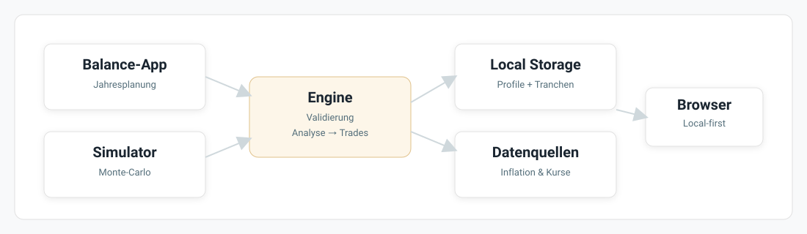
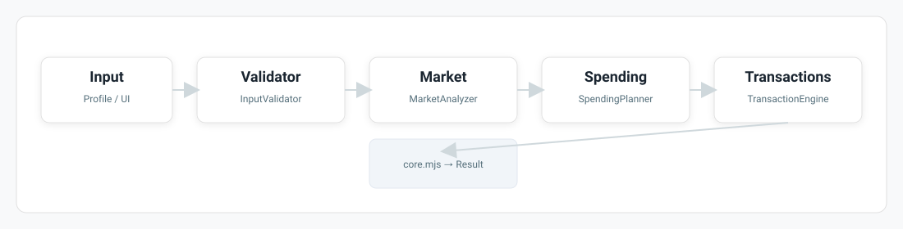
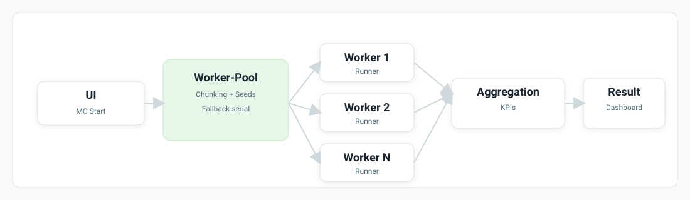
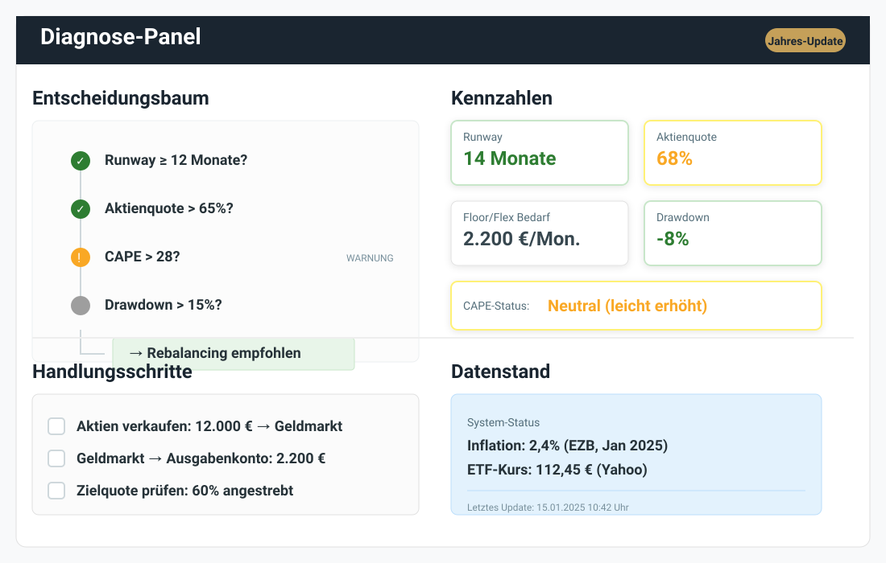
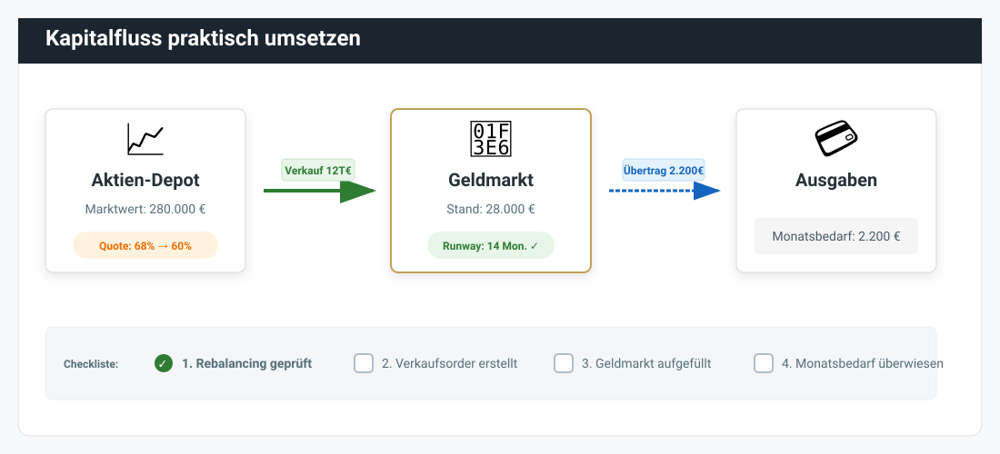
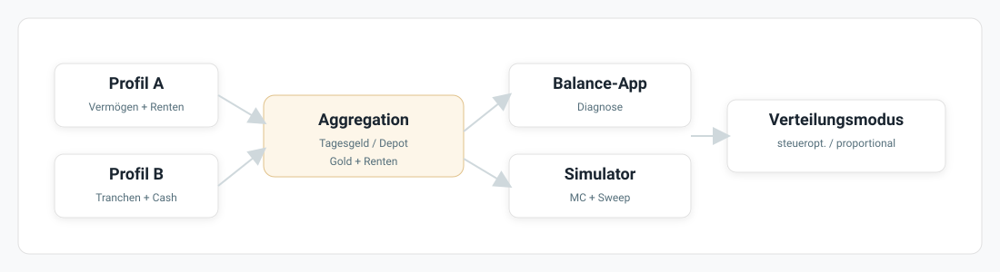

Benutzerhandbuch
Anleitungen und Hilfestellungen für Ihre Finanzplanung
Inhaltsverzeichnis
Überblick
Übersicht und Arbeitsstand
Bei einem Monats- oder Jahresabschluss beginnt die Startseite mit der Fokuskarte. Im ruhigen Zustand und im ersten Planungsjahr folgen auf Überschrift und Lead die nächsten Abschlusstermine und gegebenenfalls ein Hinweis auf veraltetes Tagesgeld, danach die Kennzahlen Vermögen, Monatsbudget und Plan sowie der Vermögensverlauf. Jahresband, Allokation, Personen und vollständiger Planvergleich bleiben darunter erreichbar. Die Durchspielen-Karte entfällt. Den Simulator öffnest du über die Seitenleiste.
Das Backtest-Endvermögen ist real in Preisen zum Backteststart. Monte-Carlo nennt Floor-Deckung, Median und P5 der vollständigen nominalen Endwerte am Laufende ohne Pflegereserve. Die Werkstatt vergleicht eine Alternative gegen Baseline auf einem fixierten Pfad; das ist keine Erfolgswahrscheinlichkeit. Abbruch oder technischer Fehler erhält den letzten erfolgreichen Stand. Die Ergebnisse folgen Profilen und werden mit Vollbackup, Profilbundle und Snapshot gesichert.
Liquidität unterscheidet „heute“ von „nach Umsetzung“. Ältere Plananzeigen ohne heutigen Wert zeigen „Heute unbekannt“. Planbetrag, Budget, Empfehlung und Hochrechnung sind keine gebuchten Bestände. Offene Pflichtschritte sind in Balance „Und jetzt?“ und auf der Übersicht dieselben. Eine Monatsbestätigung belegt nur die Bereitstellung. Handlung und fehlende oder veraltete Vorschau sind keine offenen Aufgaben; reale Cashbuchungen bleiben separat offen. „Alles erledigt“ erscheint nur bei belegter leerer Pflichtliste.
Monat abschließen
„Abschluss starten“ im Kopf der Fokuskarte öffnet den Dialog „<Vormonat> abschließen“. Offene Schritte stehen in Einzelzeilen, erledigte in der aufklappbaren Gruppe „Erledigt (Anzahl)“. Das Aufklappen speichert keine Daten. Die vier Schritte zeigen Kurse, Ausgaben, Budgetvergleich sowie Tagesgeld und Monatsbetrag.
- Kurse prüfen und bei Bedarf aktualisieren.
- Ausgaben des Vormonats je Haushaltsperson mit CSV importieren und die Vorschau bestätigen; erfasste Nullausgaben sind gültig. Im aktiven Probelauf sind auch Beispielausgaben verfügbar.
- Die vollständigen Monatsausgaben mit dem Budget vergleichen. Fehlende Belege bleiben sichtbar.
- Den Monatsbetrag selbst vom Tagesgeld aufs Girokonto überweisen. In den Feldern „Tagesgeld <Name>“ den aktuellen absoluten Stand jeder Haushaltsperson prüfen: „Nach der Überweisung des Monatsbetrags. Fließt in den Vermögensverlauf ein.“ Danach mit „<Vormonat> abschließen“ gemeinsam bestätigen. Unveränderte Werte erzeugen keinen neuen Cashbeleg; Änderungen und Monatshaken werden gemeinsam gesichert.
Bestätigte Ausgabenimporte bleiben nach Schließen und Wiederöffnung erhalten. Wie in Balance kann ein echter CSV-Import bei frischen bestätigten Kursen automatisch einen Vermögenspunkt erfassen. Ein Folgefehler erscheint getrennt unter „Ausgaben importiert; Vermögensstand nicht bestätigt“; der bestätigte Import bleibt gültig. Beispielausgaben erfassen keinen Vermögenspunkt.
Schließen, Kreuz und Escape speichern keinen Monat. Bei geändertem oder ungültigem Tagesgeldentwurf fragt der Seitenguard „Bleiben“ oder „Verwerfen“. Bleiben erhält Eingaben und Fokus; Verwerfen entfernt nur ungespeichertes Tagesgeld. Bestätigte Imports und Vermögenspunkte bleiben erhalten. Rückänderung zum Anfangswert oder finanziell gleiche Schreibweisen wie „18.000“ und „18000“ brauchen keine Verlustnachfrage. Während des Speicherns bleiben alle Schließwege gesperrt.
Nach dauerhaftem Erfolg bleibt derselbe Dialog mit „Alles gespeichert“, Ausgaben, Budgetvergleich, bestätigtem Tagesgeld je Person und Summe, Datum und Monatsbetrag des Folgemonats sichtbar. Fehlende Ausgaben oder Budgets bleiben ausdrücklich offen. Die Übersicht meldet „<Monat> abgeschlossen ✓“. „Fertig“ schließt ohne weitere Speicherung. Speicherfehler erhalten den Entwurf für „Erneut versuchen“; bei unbestätigtem Rückschreiben wird auf den Wiederherstellungspunkt verwiesen und Retry gesperrt. Im Januar öffnet „Abschluss starten“ den erweiterten Jahresdialog direkt auf dieser Startseite. Balance ist ein alternativer Einstieg in denselben Dialog.
In Schritt 6 vergleichst du Empfehlung und Dein Plan. Du kannst alle bearbeitbaren Felder aus Haushalt & Plan bewusst anpassen. Der Monatsbetrag wird daraus berechnet. Ungültige Werte sperren die Bestätigung; „Anpassung verwerfen“ stellt die Empfehlung wieder her. Bis zur Bestätigung bleiben diese Änderungen flüchtig. Danach verwendet die Januar-Bereitstellung den beschlossenen Betrag. Ein Fehler im Monatsteil lässt das abgeschlossene Jahr bestehen; erneut gespeichert wird nur der Monat. Das Protokoll und der Handkurs-Wiederherstellungsweg bleiben auf der Startseite erreichbar.
Null ist ein gültiger Betrag. Deutsche Tausendergruppen und Kommawerte werden erkannt; leere oder negative Werte und beschädigte Historien müssen zuerst geklärt werden. Nach mehr als 35 Kalendertagen zeigt die Übersicht je Person „Tagesgeld zuletzt am TT.MM.JJJJ aktualisiert“ mit Sprung zum Tagesgeldfeld. Ein fehlender oder zukünftiger Beleg erzeugt keine Alterswarnung.
Die Suite verbindet sechs Oberflächen: Die Übersicht zeigt Vermögen und Jahresplan, Personen & Vermögen pflegt Personen und Depot-Tranchen, der Simulator untersucht langfristige Szenarien und Balance unterstützt Jahresabschluss und operative Entnahmeplanung. Daten & Sicherung verwaltet Dateien, Wiederherstellungspunkte und Kursdienst; dieses Handbuch erklärt die Bedienung. Folgen Sie für einen neuen Datenbestand der Nutzerreise im Inhaltsverzeichnis: Start und Datensicherheit, Profile und Tranchen, Simulator, Balance sowie Fehlerhilfe und Begriffe.

Vor dem Ruhestand
Pflegen Sie Vermögen, Personen und Rentenbeginn zentral in Personen & Vermögen. Der Simulator prüft Ihren Entnahmeplan mit dem heutigen Vermögen; eine Sparrate lässt sich derzeit nicht bedienen.
Ansparrechnung: Ausblick
Die Ansparbedienung wurde entfernt. Bestehende gespeicherte Ansparwerte bleiben erhalten und werden in Simulatorläufen ignoriert.
Für eine spätere Neukonzeption ist eine noch arbeitende Person mit Sparrate und Rentenbeginn aus Personen & Vermögen vorgemerkt.
Installation & Start
Wählen Sie eine der beiden Laufzeitvarianten. Hinweise zur Datenablage finden Sie auf Daten & Sicherung.
Desktop-App (Tauri)
Bauen Sie die EXE einmal mit npm run build:desktop (siehe README) und starten Sie
RuhestandSuite.exe per Doppelklick. Die Desktop-App benötigt für
lokale Eingaben und Berechnungen keinen separat gestarteten Browser und kein Node.js.
Browser über lokalen HTTP-Server
Entpacken Sie das Repository und starten Sie start_suite.cmd (Windows) oder
npm run serve. Der Windows-Starter öffnet die Startseite über
http://localhost:…. Ein direktes Öffnen der HTML-Dateien über
file:// ist wegen ES-Modulen und Workern kein regulärer Startweg.
Netzwerk und optionale Live-Daten
- Kernrechnung, manuelle Eingaben und lokale Persistenz funktionieren ohne Internet. Google Fonts sowie Live-Kurse und Inflations-/CAPE-Abrufe sind optionale externe Netzwerkpfade.
- Die Browser-Variante benötigt Node.js: Der Starter betreibt Webserver und Yahoo-Proxy in einem Node.js-Prozess; die Tauri-EXE bringt ihren Loopback-Proxy selbst mit. Ist der Proxy-Port belegt, läuft die Browser-Suite ohne Online-Kursabrufe weiter; Kurse können weiterhin manuell gepflegt werden.
- Beenden Sie die lokalen Dienste mit Strg+C oder durch Schließen des Starterfensters, wenn der Browser geschlossen wird.
Daten sichern & wiederherstellen
Auf Daten & Sicherung liegen Dateisicherung, Einspielen, lokale Wiederherstellungspunkte, Kurse, Speicher und Personenaustausch zusammen.
Vollsicherung und Einspielen
„Jetzt sichern“ in der Karte „Vollsicherung“ gibt eine JSON-Datei mit Personen, Depot, Ausgaben, Tagesgeld-Historie, Tageskursen und importierbaren Einstellungen aus. Das separate Archiv und UI-/Layout-Einstellungen gehören nicht dazu. Die Sicherungszeit bestätigt die angestoßene Dateiausgabe; der Browser bestätigt weder Speicherort noch abgeschlossenen Dateidialog. Bewahre die Datei außerhalb des App-Speichers auf. Ab 30 Tagen erinnert die Übersicht; für den Jahresabschluss gilt zusätzlich die Empfehlung nach sieben Tagen.
„Sicherung einspielen“ ersetzt nach Bestätigung den zulässigen Sicherungsumfang. Vorher werden eine Recoverydatei ausgegeben und ein lokaler Recoverypunkt geschrieben und zurückgelesen. Auch bei einem fehlgeschlagenen Balance- oder Vollimport erscheint ein bereits angelegter Punkt sofort unter Wiederherstellungspunkte. Die Importfehlermeldung bleibt sichtbar. Bei Fehlern den genannten Punkt unter Wiederherstellungspunkte wählen; bei unbestätigtem Rollback nicht mit veralteten Eingaben weiterarbeiten.
Lokale Punkte und Zurückholen
Punkte entstehen etwa vor Monats- und Jahresabschlüssen, Personenumstellung und Importen. Sie liegen auf diesem Rechner und ersetzen keine externe Dateisicherung. „Zurückholen …“ klappt die Vorschau in der gewählten Zeile auf. Sie nennt Eurobeträge und die Bereiche, die entfallen, unverändert bleiben oder erhalten werden. Bereits ausstehende Eingaben werden vor der Vorschau gespeichert; der gewählte frühere Stand und ein Rückkehrpunkt werden erst nach deiner Bestätigung geschrieben. Schließen, Abbrechen und Escape führen zur Zeilenaktion zurück.
Standard-Zurückholen setzt den zugeordneten Profilstand und gemeinsame Fachdaten zurück. Andere Profile, Tageskurse, Verlaufsbeginn, technische Einstellungen, Sicherungszeit und Archiv bleiben erhalten. Vollständige Vollimport-Recovery setzt auch den Personenverbund, Tageskurse und zulässige globale Einstellungen zurück. Vor jeder Ausführung entsteht ein bestätigter Punkt „vor Zurückholen“ im gleichen Umfang. Damit kannst du den unmittelbar vorherigen Stand wieder zurückholen.
Aufbewahrung und Löschen
Alle Punkte der einschließlich letzten 30 Tage bleiben. Ältere Monatsvertreter werden je Profil und Wiederherstellungsumfang aufbewahrt. Jahresabschluss- und Umstellungspunkte bleiben dauerhaft; unbekannte, beschädigte, noch benötigte Recovery- und Probelaufpunkte vorsorglich ebenfalls. „Aufräumen …“ zeigt den Löschplan. Ist nichts entfernbar, erscheint nur „Nichts aufzuräumen“ mit „Verstanden“. Ein einzelner Punkt ist nur löschbar, wenn ein jüngerer erhaltener Punkt denselben Umfang und dieselbe Zuordnung abdeckt. Abbrechen schreibt nichts.
Personenaustausch und Balance-Dateien
Wähle eine Person und bestätige den Export mit Depot, Personendaten und Cashhistorie. „Person importieren“ zeigt den Namen und legt nach ausdrücklicher Bestätigung eine neue Außenperson an. Bestehende Personen, aktive Auswahl, Globals und Tageskurse werden nicht ersetzt. Haushaltsmitgliedschaft anschließend unter Personen & Vermögen ändern; fremde Partnerzuordnungen werden nicht übernommen.
Unter „Weitere Austauschwege“ bleiben Balance-JSON mit Engine-Vor-/Nachprüfung und Import-Recovery erreichbar. Das ist kein Vollbackup. Die Legacy-Ordnerverbindung erhält gespeicherte Browser-Handles; kanonische Punkte liegen unabhängig davon im App-Speicher. Sie behauptet keine Dateisicherung in diesen Ordner. Simulatorprotokolle (JSON/CSV) bleiben im Simulator, manuelle aktuelle Kursaktualisierung und „Alle Tranchen löschen“ im Vermögen.
Kurse, Speicher und Probelauf
Offene Kursintervalle sind noch nicht bestätigte Abrufzeiträume, keine fehlenden Kalendertage. Erfolgreich geprüfte Wochenenden und Feiertage sind abgedeckt. Dienstprüfung bestätigt keine neuen Kurse; Lücken nachladen nutzt den bestehenden fortsetzbaren Abruf.
Speicherart, Datenablage, Eintragszahl, Datengröße und Hinweise zur Wiederherstellung finden Sie ausschließlich auf Daten & Sicherung → Speicher. Die „Technischen Details“ erläutern dort die Ablage und Sicherungsformate.
Im Probelauf sind Dateisicherung, Einspielen, Personenaustausch, Zurückholen und Aufräumen gesperrt. Beende ihn über das Band. Ein Probelauf startet auf jeder Seite oben über „Probelauf …“ in der Kopfzeile. Balance-Dateien, Simulator-Ergebnisse, -Protokolle und -Stresspfade sowie die Notfallwiederherstellung im Vermögen behalten ihre bestehenden Wege.
Haushalt & Plan
Ohne Sprungziel startet jede neue Seite mit Person 1, dem ersten Haushaltsmitglied; ohne Haushalt mit dem ersten Profil. Direkt vor den Inhaltskarten steht genau eine Reiterliste: Haushalt & Plan, Haushaltspersonen in ihrer Reihenfolge, dann Außenpersonen. Ohne Haushalt heißt der erste Reiter „Plan · Name“.
Der Planreiter zeigt Haushaltsvermögen neben dem Plananfang, die bisherigen Personenübersichten und den Planvergleich. Ein Personenreiter beginnt mit Person & Einkommen, danach Tagesgeld & Gold, Pflege, Depot, Verkäufe/Cashstatus und Technik dieser Person. Der Depot-Link im Personenansichtskopf führt zum bestehenden Depotabschnitt. Der ausführliche Vermögensverlauf steht im eigenen Reiter „Verlauf“. Dort wählst du Haushalt oder eine Person; die Personenwahl lädt deren Daten für die Erfassung. „Verlauf ansehen ›“ unter den kleinen Linien in den Karten öffnet die passende Auswahl. Plan und Personendaten beginnen direkt unter den Reitern. „Öffnen“ auf der Karte erreicht dieselbe Person auch aus dem Planmodus. Links/Rechts und Home/End bewegen den Fokus; Enter oder Leertaste bestätigen den Wechsel. Autosave und Rückfragen werden vorher abgeschlossen; Abbruch oder Speicherfehler erhalten die bisherige Ansicht. Ein bestätigter interner Wechsel bleibt beim Neuzeichnen erhalten, ein neuer Seitenstart beginnt wieder mit Person 1.
Links zu Plan, Personendaten, Depot und Tagesgeld wählen die passende Ansicht, öffnen nötige Abschnitte und fokussieren sichtbare Inhalte. Profilbezogene Links wählen zuerst die angegebene gültige Person. „#personen“ öffnet weiterhin die Verwaltung. Unbekannte Ziele und ungültige oder doppelte Personenangaben wechseln kein fremdes Profil.
Im Manager öffnet der erste Ansichtsreiter Haushalt & Plan einschließlich Planvergleich. Hier pflegen Sie Bedarf pro Jahr, Flex-Budget, Reserven, Entnahme & Umschichten und Dynamik. Marktdaten aus dem Jahresabschluss stehen zur Ansicht dabei. Änderungen werden automatisch gespeichert und gelten gemeinsam für Balance und Simulator. Haushaltsmitglieder teilen einen Plan; eine Außenperson verwendet ihren eigenen Einzelplan.
Dynamic-Flex-Voreinstellungen
In der Gruppe Dynamik stehen Aus · Konservativ · Ausgewogen · Offensiv · Benutzerdefiniert. Balance, Simulator, Manager und Jahresdialog verwenden dieselbe gemeinsame Presetquelle. Feste Voreinstellungen blenden alle Dynamikdetails aus; der Hinweis „Voreinstellung gilt; Details sind ausgeblendet.“ bleibt sichtbar.
Benutzerdefiniert schaltet ausgeschaltete Dynamik mit Ihren vorhandenen Detailwerten ein und öffnet die Details. Ist die Dynamik bereits aktiv, öffnet es nur die Details, auch wenn die Werte zu einer Voreinstellung passen. Diese Öffnungsabsicht bleibt während der Bearbeitung erhalten. Ausschalten erfolgt über Aus. Nach Neuladen wird die passende aktive Voreinstellung oder Benutzerdefiniert erkannt; alte Detailwerte ändern die Anzeige Aus nicht.
Im Manager wird jede fachliche Presetwahl zusammen mit offenen Eingaben als vollständig validierter Autosave gespeichert. Ungültige Werte müssen korrigiert werden; Mindest-Flex wird nicht still begrenzt. In Balance und Simulator bleibt die Wahl Teil des Versuchs bis zur ausdrücklichen Übernahme. Im Jahresabschluss unter Plan anpassen … ändert die Wahl nur den Entwurf und berechnet ihn neu. Abbruch und Anpassung verwerfen erhalten den bestätigten Plan und Beleg. Erst die Abschlussbestätigung übernimmt den Entwurf. Marktdatenherkunft und übrige Planfelder bleiben erhalten.
Balance zeigt die Planfelder in „Bedarf“ und „Reserven & Entnahme“ sowie „Alle Parameter“ zunächst lesend. „Nur hier ausprobieren“ in einem der beiden Köpfe öffnet denselben Versuch. „Zurück zum Plan“ und Neuladen verwerfen ihn. Der Link „In Haushalt & Plan ändern“ öffnet den Manager im passenden Kontext.
Das beige Band zeigt die Abweichungen. Bei der Übernahme wählen Sie pro Planfeld „Übernehmen“ oder „Im Plan belassen“; nur gültige ausgewählte Änderungen werden gespeichert. Abbruch erhält den Versuch. Das Gold-Umschichtungsband ist nur lokal ausprobierbar; seine dauerhafte Pflege bleibt unter Personen & Vermögen.
Balance kennzeichnet abweichende Ergebnisse mit „mit Abweichung vom Plan“. Die Startseite, gespeicherte Handlungsanweisung, nächste Schritte und Jahresbeleg bleiben beim bestätigten Plan. Ein anschließender Jahresabschluss verwirft den Versuch und beginnt aus diesem Plan.
Inflation bleibt auch im Versuch lesend. Angezeigt werden gespeicherter Wert, Jahr aus der Belegperiode und Herkunft; bei einem Altstand ohne Beleg wird keine Herkunft erfunden. Die jährliche Bedarfsfortschreibung und eine nötige manuelle Ersatzrate gehören weiterhin zum Jahresabschluss.
Festgeschrieben und Vorschau heute
„festgeschrieben“ zeigt die beschlossenen Werte aus dem Jahresabschluss. „bewusst angepasst“ kennzeichnet eine ausdrückliche Anpassung. Ohne Beleg steht „Noch kein festgeschriebener Plan – er entsteht im nächsten Jahresabschluss.“ „Vorschau heute“ bedeutet: So sähe es aus, wenn heute Jahresabschluss wäre. Nur die Handlungsanweisung aus dem Jahresabschluss ist verbindlich. Eine angezeigte Empfehlung besagt nicht, dass sie ausgeführt wurde.
Im Simulator nur hier ausprobieren
Planwerte stehen zunächst lesend als „aus Haushalt & Plan“ da. „Im Plan ändern“ öffnet den Manager. In den Köpfen von „2 Bedarf“ und „3 Reserven & Entnahme“ startet „Nur hier ausprobieren“ denselben Versuch für beide Karten; auch Voreinstellungen gehören dazu. Beide Knöpfe heißen dann „Zurück zum Plan“. Nur im Versuch erscheint das kompakte beige Band mit den tatsächlichen Abweichungen. Die Liquiditäts-Reichweite bleibt auch ohne Versuch sichtbar. Der Versuch wird nicht gespeichert. Beim Neuladen oder mit „Zurück zum Plan“ sehen Sie wieder die aktuellen Planwerte.
„Auswahl in den Plan übernehmen“ zeigt die alten und neuen Werte. Für jede Änderung wählen Sie „Übernehmen“ oder „Im Plan belassen“. Erst Ihre Zustimmung speichert die ausgewählten gültigen Änderungen gemeinsam für Balance und Simulator. Das Gold-Umschichtungsband bleibt ein lokaler Profilversuch und wird nicht in den Haushaltsplan übernommen. Abbrechen erhält den Versuch. Mindest-Flex darf Flex nicht überschreiten; ungültige Werte werden nicht still gekürzt. Ergebnisse mit einer Abweichung tragen „mit Abweichung vom Plan“ und ersetzen kein Planergebnis auf der Startseite, auch nach späterer Übernahme. Größere Was-wäre-wenn-Läufe mit mehreren Änderungen: im Spielbereich.
Der Wiederherstellungspunkt vor der Umstellung auf Haushalt & Plan bleibt dauerhaft erhalten. Sie finden ihn unter Daten & Sicherung › Wiederherstellungspunkte als „Planumstellung · dauerhaft“.
Datensicherheit & Wiederherstellung
Ihre Finanzdaten bleiben lokal. Browser und Desktop verwenden jedoch getrennte Speicherorte; es gibt weder automatischen Cloud-Sync noch eine automatische Übertragung zwischen beiden Varianten.
Speicher und Profilkontext
- Browser: Private Fenster, Browserbereinigung oder ein anderes Browserprofil können den Zugriff auf diese Daten verhindern.
- Desktop: Die EXE-Datei selbst ist kein Backup Ihrer Nutzerdaten.
- Vor einer Eingabe: Auf der Startseite „Aktiv: …“ und „Profil waehlen“ kontrollieren. Beim Profilwechsel wird zuerst der aktuelle Stand gespeichert und dann das Zielprofil geladen. Schlägt Speichern oder Laden fehl, nicht im vermeintlichen Zielprofil weiterarbeiten; den angezeigten Recovery-Hinweis befolgen.
- Beim Wechsel in eine Teil-App: Balance, Simulator und Profil-Assets-Manager über die Startseite öffnen und den dort übergebenen Profilkontext abwarten.
Drei Sicherungsarten mit unterschiedlichem Zweck
- Komplettbackup: Unter „Daten & Sicherung > Jetzt sichern“ werden die Personen und ihre App-Daten in eine Datei geschrieben. „Sicherung einspielen“ stellt diesen Datenbestand wieder her. Nutzen Sie das Komplettbackup vor größeren Änderungen und zur Übertragung zwischen Browser und Desktop.
- Jahresabschluss-Snapshot: Die Balance-App erzeugt vor fachlichen Jahresabschluss-Writes einen internen Recovery-Punkt. Er dient der Wiederherstellung dieses Prozesses und ersetzt kein extern aufbewahrtes Komplettbackup.
- Ergebnisexport: Balance-, Monte-Carlo-, Backtest- und Szenarioexporte dokumentieren einen bestimmten Stand oder Lauf. Sie sind nicht automatisch ein vollständiges Backup aller Profile und Einstellungen.
Offlinegrenze bei einem begonnenen Jahresabschluss
Ein normaler lokaler Rechenlauf kann offline fortgesetzt werden. Anders ist ein bereits gestarteter, periodengebundener Jahresabschluss: Scheitert danach ein erforderlicher Datenabruf, kann der verifizierte Recovery-Snapshot zusammen mit einem sichtbaren unvollständigen Periodenstatus bestehen bleiben. Deuten Sie das nicht als erfolgreichen Offlineabschluss. Folgen Sie dem Recovery-Hinweis und schließen Sie den Prozess erst nach dem erfolgreichen erforderlichen Datenschritt ab.
Simulator
Prüfen Sie Ihren Entnahmeplan mit historischen Jahren und möglichen Zukunftspfaden.

Eingaben
Bedarf und Strategie kommen aus Haushalt & Plan. Für flüchtige Änderungen wählen Sie „Nur hier ausprobieren“; erst eine bestätigte Übernahme ändert den gemeinsamen Plan.
Arbeiten Sie die sichtbaren Bereiche von oben nach unten ab: Profile, Startportfolio und Bedarf, Runway/Rebalancing, Personen/Rente sowie Pflegefall-Absicherung. Profilwerte werden vor dem Start validiert; widersprüchliche Portfolio- oder Pflichtwerte blockieren den Lauf.
- Portfolio: Gesamtvermögen und Teilbestände für Depot, Tagesgeld, Geldmarkt und Gold müssen zusammenpassen.
- Bedarf: Floor, Flex und optionaler Mindest-Flex sind Jahresbeträge. Mindest-Flex bleibt eine validierte Untergrenze innerhalb des Flex-Bedarfs und wird bei ungültiger Eingabe nicht still begrenzt.
- Monte-Carlo: Starten Sie direkt in der Ergebniskarte oder unter „Einstellungen“ des Monte-Carlo-Reiters mit „Monte-Carlo rechnen“ beziehungsweise „Monte-Carlo neu rechnen“. Fortschritt, fertige Läufe und Abbruch werden in beiden Ansichten angezeigt. „Einstellungen ändern“ in der Ergebniskarte öffnet den Monte-Carlo-Reiter. „Einstellungen anzeigen“ öffnet die anfangs geschlossenen Optionen. Zufallsgenerator, parallele Rechenprozesse, Zeitbudget, Vergleich und Telemetrie stehen unter „Erweitert“.
- Kosten und Pflege: Kosten-, Steuer- und Pflegeannahmen sind Modellinputs. Reale Rechts-, Steuer- und Pflegefälle werden dadurch nicht abschließend bewertet.
Personen & Rente
Geburtsdatum, Geschlecht, Rente, Rentenbeginn und Steuern pflegen Sie zentral unter Personen & Vermögen → Person & Einkommen. Balance und Simulator übernehmen diese Werte. Im Simulator erscheinen die übernommenen Personenwerte als schreibfreie Liste; „In Personen & Vermögen ändern“ führt zur Karte der aktiven Person.
- Indexierung: Die gemeinsame Rentenanpassung folgt dem Hauptprofil: fix mit Prozentwert, Lohn oder Inflation (CPI). Ohne Anpassung wählen Sie fix mit 0. Der feste Satz ist bei Lohn-/Inflationskopplung nicht bearbeitbar.
- Hinterbliebenenlogik: Hinterbliebenenrente mit Mindest-Ehezeit und prozentualem Bezug aktivieren.
- Partner: Die Auswahl von höchstens zwei Profilen bestimmt Hauptperson und Partner; es gibt keinen separat gespeicherten Partner-Personenschalter.
- Sweep-Schutz: Felder der zweiten Person sind in Sweeps geschützt; gesperrte Variationen werden in der Heatmap markiert.
Alternativen ausprobieren: Aktivieren Sie „Für diese Rechnung abweichend ansetzen“ und ändern Sie etwa Geburtstag, Monatsrente oder Rentenbeginn. Das Alter und der Rentenoffset bleiben daraus abgeleitet. Nur wirksame Unterschiede heißen „Abweichung · nur diese Rechnung“. Hinterbliebenen-, Langlebigkeits- und Pflegeannahmen bleiben eigene Simulatorparameter.
Ausschalten, Profilwechsel, Zurücksetzen oder Seitenreload verwerfen die Alternativen. Ihre zentralen Personendaten bleiben unverändert. Ein fertiges Ergebnis, sein Protokoll und seine JSON-/CSV-Downloads behalten die beim Lauf verwendeten Werte, auch wenn Sie danach eine neue Alternative eingeben. Ergebnisdateien sind keine Profilsicherung.
Parameter
Prüfen Sie Entnahmestrategie, Dynamic Flex, Portfolio-/Kostenannahmen und Monte-Carlo- Steuerung als zusammengehörigen Modellvertrag. Vorausgefüllte Werte sind keine persönliche Empfehlung.
Die Simulationsmethode ist wählbar: Regime-Sampling (Markov oder iid), Block-Bootstrap oder Stationary Bootstrap. Das separate Fat-Tail-/Crash-Overlay gehört nicht zur Basissimulation und bleibt standardmäßig deaktiviert.
- Datenbasis: Historische Jahresrecords reichen bis 1925; Jahre vor 1950 können als geschätzt gekennzeichnet und über die sichtbare Option ausgeschlossen werden.
- Dynamic Flex: Aktivierung, aktuarische Horizon-Methode, Survival-Quantil, optionales Go-Go und Langlebigkeits-Puffer beeinflussen nur den flexiblen Bedarf; der Floor bleibt getrennt.
- CAPE-Return-Policy:
legacy_stepbleibt der Engine-Default.cape_continuousist ein expliziter Config-Modus, kein Schalter der normalen Simulatoroberfläche und keine Auto-Optimize-Dimension. Diagnose und Detail-Logs weisen die tatsächlich verwendete Policy aus. - Kosten: Hinterlegte Kosten reduzieren die modellierten Renditen. Sie ersetzen keine Prüfung realer Produkt-, Handels- oder Steuerkosten.
Stresstests & Presets
Wählen Sie im Monte-Carlo-Bereich optional ein Stresspreset für die ersten Simulationsjahre. Das getrennte Tail-Risk-Overlay muss über „Fat-Tail-/Crash-Overlay aktivieren“ ausdrücklich zugeschaltet werden.
- Stresspreset: Erzwingt das gewählte Szenario zu Beginn des Laufs und ist von der normalen historischen Stichprobe zu unterscheiden.
- Tail Risk: Jahreswahrscheinlichkeit, Aktien- und Inflationsschock, Dauer und Cooldown sind zusätzliche Stressannahmen, keine Prognose. Historische Krisenjahre erhalten keinen weiteren Return-Schock.
- Vergleichbarkeit: Gleicher Seed, RNG-Modus, Samplingvertrag, Datenfilter und gleiche Inputs sind Voraussetzung für einen nachvollziehbaren Vorher-/Nachher-Vergleich.
Depot-Tranchen-Manager
Für eine realistische Steuerberechnung können Sie Depotpositionen im gewählten Profil als einzelne Tranchen pflegen. Ein valider Detailbestand ermöglicht lotbezogene Verkäufe und Steuerabzüge; ein explizit leerer Bestand nutzt die vereinfachte Aggregatsicht. Korrupte oder widersprüchliche Daten blockieren sichtbar. Der Simulator arbeitet auf tiefen Kopien und verändert den Realbestand nicht. Die Zustände, Recovery-Wege und der reale Verkaufsabgleich sind im Abschnitt Tranchenzustände und Recovery beschrieben.
- Öffnen: Profil auf der Startseite wählen und „Profil-Assets Manager“ öffnen.
- Speichern: Warten Sie die Bestätigung ab, bevor Sie weiterarbeiten. Speicherinformationen stehen unter „Daten & Sicherung“.
- Wirkung: Simulierte Verkäufe werden steueroptimiert aus Kopien der Tranchen ausgewählt und behalten ihre Profilherkunft.
- Backup: Das zentrale Komplettbackup unter „Daten & Sicherung“ verwenden; es gibt keinen separaten Tranchen-Teilimport/-export. Vor dem ersten Einsatz des Cashstatus-Workflows „Daten & Sicherung“ in der Suite-Navigation öffnen und „Jetzt sichern“ auf Daten & Sicherung wählen.
Vermögensverlauf und Tageskurse
Die Übersicht sowie die Haushalts- und Personenkarten zeigen den Verlauf bis zum letzten Tagesabschluss. Messbeginn, Messstatus und Zeitraum stehen im ⓘ direkt am jeweiligen Verlauf; Warnungen zu Teilabdeckung, ungeprüften Werktagen und Bewertungsfehlern bleiben sichtbar. Personen außerhalb des Haushalts behalten ihre eigene Karte, zählen aber nicht zur Haushaltssumme. An der Haushaltskarte können Sie „Verlauf ab …“ mit einem Datum bestätigen. Ein früherer Beginn erweitert den Zeitraum, ein späterer blendet frühere Tage aus; gespeicherte Kurse bleiben erhalten. Das Datum gilt gemeinsam und bleibt bei Personenwechsel, Neustart und Komplettbackup bestehen.
Fehlende Tageskurse werden nach der normalen Kursaktualisierung beim Start auf der Übersicht nachgeladen, höchstens 20 Sekunden je neuer Sitzung. Große Zeiträume können mehrere Starts benötigen. Eine Beginnänderung startet keinen zusätzlichen Abruf. Ungeprüfte Werktage erscheinen als Lücken; geprüfte Börsenfeiertage sind keine Lücke. Ohne Ticker gibt es keinen Kursverlauf. Nach drei erfolglosen Versuchen nennt die App den Fehlergrund; bestätigte Daten bleiben bei Abbruch oder Speicherfehler erhalten.
Im Depot öffnet der Pfeilknopf (auch Enter oder Leertaste) Schlusskursgrafik, Kaufpreislinie, bestätigte Verkäufe und Kursabdeckung. „Entwicklung“ vergleicht Kurse seit Kauf oder Aufzeichnungsbeginn, unabhängig von verkauften Stücken. Fehlt nur der Anfangskurs, beginnt der Vergleich vorläufig am ersten tatsächlichen EUR-Schlusskurs. Zusammenfassung und Detail zeigen den „Messbeginn“. Ein gespeicherter Vorgängerkurs erlaubt die ursprüngliche Basis; ohne Kurs bleibt der Vergleich nicht verfügbar, bei Einzelpunkt oder Nullbasis fehlt der Prozentwert. Es werden keine Kurse vor Aufzeichnungsbeginn oder Kaufdatum und keine heutigen Verlaufskurse nachgeladen. Pflegen Sie Tagesgeld durch bestätigte Änderungen: Der vorherige Betrag bleibt vor dem ersten Eintrag eine rückwirkend angenommene Basis.
„Entnahmen“ stammen aus erfassten Tagesgeld-Tagesnettorückgängen: Nur der letzte bestätigte Stand je Kalendertag zählt gegenüber dem vorherigen Tagesstand. Zwischenwerte bleiben gespeichert; ein Rückgang mit vollständiger Erholung am selben Tag ergibt keine Entnahme. Die Berechnung erfolgt getrennt je Person, danach werden die Entnahmen für den Haushalt summiert. Einzahlungen einer anderen Person kompensieren sie nicht. Rückgänge können auch Transfers enthalten; Bruttoabflüsse werden damit nicht gemessen. Verkäufe und Monatshaken werden nicht zusätzlich als Entnahmen gezählt. Fehlen ausschließlich erste Schlusskurse, beginnen auch die fünf Kennzahlen vorläufig am ersten vollständig bewertbaren Tagesabschluss. Dieser Messbeginn wird genannt; Tage davor bleiben im Chart unbekannt. Rückgänge am Messtag sind bereits in der Basis enthalten; nur Rückgänge danach zählen als Entnahmen. Die Regel gilt für „Seit Beginn“, „Laufendes Jahr“ und „12 Monate“. Unbekannte Zwischen- oder Endpunkte, Bestände, Ticker, Währungen und Cashbeträge verhindern weiterhin vollständige Kennzahlen. „Ohne Entnahmen gerechnet“ ist keine Renditeberechnung. Fehlende Cashhistorie oder Kurse bleiben kenntlich. Vor Einführung des Verlaufs entfernte Tranchen ohne erhaltene Stammdaten lassen sich nicht vollständig rekonstruieren; neue bestätigte Totalverkäufe bewahren ihre Verlaufsstammdaten im Backup.
Manuelle Änderungen an Stückzahl, Kaufdatum, Anlageform oder ISIN sowie manuelles Entfernen sind kein belegter Verkauf. Wenn eine zuvor verlässliche Bestandskopie den frühesten möglichen Kaufbeginn sichert, bleibt der Verlauf nur vor dieser Grenze vollständig; ab ihr ist der Bestand unbekannt. Spätere Kaufdaten oder wiederholte Erfassung verschieben die gesicherte Grenze nicht nach hinten. Bei alten unbekannten Kopien ohne gesicherte Herkunft kann das ursprüngliche Kaufdatum bereits überschrieben sein: Dann bleibt jeder Tag unbekannt, auch wenn Livebestand und Kopie übereinstimmen oder die Tranche entfernt wurde. Die App erfindet keine nachträgliche Herkunft.
In der aktiven Personenkarte im Profil-Assets-Manager können unbekannte Fehleingaben ausdrücklich repariert werden: Bei vorhandener Tranche zuerst über „Bearbeiten“ die Stammdaten korrigieren, dann „Korrigierten Bestand für den Verlauf bestätigen“ wählen. Bestätigt werden Kaufdatum, Anlageform, ISIN und Stückzahl als rückwirkend gültig; darauf beruhende berechenbare Vermögenskennzahlen bleiben vorläufig. Ein bewusst späterer Nachkauf gehört in eine neue Tranche.
Ist die fehlerhafte Tranche bereits entfernt, verwirft „Fehleingabe aus dem Verlauf verwerfen“ ausschließlich die Verlaufskopie als nie gültigen Bestand. Depot und Tagesgeld bleiben unverändert; es entstehen weder Verkaufsmarke noch Entnahme. Für einen tatsächlichen Verkauf die Verkaufsabstimmung verwenden. Bestätigte Verkaufsbelege sperren beide Wege; beschädigte Daten oder widersprüchliche Profilkopien erlauben keine Reparatur. Auch alte Kopien ohne gesicherten Kaufbeginn werden erst nach Bestätigung bewertbar. Abbrechen schreibt nichts; nach einem Speicherfehler erneut bestätigen. Die Reparatur bleibt nach erneutem Öffnen erhalten.
Die Reparaturknöpfe können mit Enter oder Leertaste aktiviert werden. Nach Abbruch kehrt der Fokus zum Knopf zurück, nach Erfolg zur Ergebnismeldung.
Bei Teilabdeckung zeigen Übersicht und Personenkarten den bekannten Betrag aus gültigen Tranchen und Tagesgeld. Das ist keine vollständige Vermögenssumme. Gültige Beiträge derselben Anlageform und anderer Personen bleiben darin enthalten; Außenprofile bleiben getrennt. Alte und neue Anlageform verbergen unbekannte Bestände nicht. Die Regel für fehlende erste Kurse überspringt keine Bestandsunsicherheit.
Pflegebucket
Der Pflegebucket ist eine optional gesperrte Geldmarkt-/Cash-Reserve für schwere Pflegefälle. Er wird in der Profilpflege definiert und im Simulator nicht als freie Liquidität behandelt.
- Wo pflegen: In der Profil-/Tranchenpflege als „Pflegebucket“ aktivieren und Zielbetrag, Mindestpflegegrad sowie Deckungsmodus festlegen.
- Quelle: Der Simulator bildet den Bucket zuerst aus Geldmarkt-Tranchen, danach aus ungetranchtem Geldmarkt und zuletzt aus Tagesgeld. Aktien, Gold und Bonds werden dafür nicht automatisch verkauft.
- Wirkung: VPW, Runway und Ziel-Liquidität rechnen nur mit operativer Liquidität. Der gesperrte Betrag erhöht daher nicht den normalen Konsumspielraum.
- Freigabe: Bei aktivem Pflege-Trigger kann der Bucket vor Notverkäufen Liquiditätslücken decken. Standard ist Pflegegrad 4 oder höher bei Person 1 oder Person 2.
- Warnungen: Reichen Geldmarkt/Cash beim Start nicht aus, wird der Bucket gekappt und im Log als Warnung angezeigt.
- Inflation: Der inflationsangepasste Zielwert ist eine Diagnose. Die Suite zeigt Zieldeckung und Lücke, füllt den Bucket aber nicht automatisch nach.
Simulation starten
Das Monte-Carlo-Ergebnis-Cockpit führt in der Reihenfolge Setup → Laufstatus → Ergebnisansichten → Stresspfad-Replay durch die Auswertung. Öffnen Sie im Setup die Parameter, prüfen Sie „Anzahl Simulationen“, Dauer, Blockgröße, Seed, Simulationsmethode und RNG-Modus und klicken Sie auf „Monte-Carlo-Simulation starten“. Der Standard sind 10.000 Pfade. 1 bis 100.000 Läufe liegen im empfohlenen interaktiven Bereich; mehr als 100.000 bis höchstens 1.000.000 erfordern nach jeder Parameteränderung eine ausdrückliche Großlastbestätigung.
Ab 100.000 Läufen erscheint ein Hinweis, ab 1.000.000 die verstärkte Variante. Die Dauer wird aus einem vergleichbaren erfolgreichen Lauf geschätzt oder als noch nicht abschätzbar bezeichnet. Das 95-%-Wilsonintervall erklärt Simulationsfehler der Floor-Deckung; bei unbekannter Deckung wird eine konservative 50-%-Grundlage benannt, kein Modellrisiko. „Mit … Läufen rechnen“ beziehungsweise „Trotzdem rechnen“ startet denselben Lauf mit bewusster Großlaufbestätigung. „Auf 10.000 Läufe zurück“ setzt nur die Laufzahl.
Der Jahresfächer zeigt P5–P95, P25–P75, Median und lebende/ruinierte Haushalte. Er zählt Jahresendvermögen noch lebender fachlich gültiger Haushalte, einschließlich Nullvermögen nach Ruin. Der gemeinsame Real-/Nominalschalter gilt auch für den Szenariohintergrund. Strikt unter 5 % lebenden Haushalten endet der Fächer. Feste 1-%-Klassen liefern Schätzungen; Unter-/Überlauf und fehlende Inflation behaupten keine Genauigkeit. Alte oder fehlende Jahresdaten zeigen einen Platzhalter. Nur der Zusatzspeicher des Fächers bleibt bei gleichem Horizont und gleicher Workerzahl konstant; die übrigen MC-Ergebnisdaten wachsen mit der Laufzahl. Downloads bleiben vollständig unverändert.
- Ressourcen: „Geschätzte Rechenlast“ leitet Run-Jahre und Speicherklasse aus Runzahl und Dauer ab. „Worker-Anzahl“ erlaubt 0 für automatisch oder 1 bis 32 explizit; „Job-Timebudget (ms)“ erlaubt 50 bis 5.000 und steuert das automatische Chunking.
- Reproduzierbarkeit: Der Seed liegt zwischen 0 und 4.294.967.295. „Per-Run Seed“ ist der deterministische Normalmodus; „Legacy Stream“ dient dem Vergleich mit alten Ergebnissen.
- Sampling: Uniform, harter Startjahr-Filter oder Recency-Half-Life bestimmen die Auswahl. Das pro Lauf ausgewählte Startjahr ist das erste simulierte Marktjahr: Block- und Stationary-Sampling setzen von dort blockweise fort, Markov startet im zugehörigen Regime und iid zieht ab dem Folgejahr unabhängig.
- Vorrang: Aktiviertes CAPE-Sampling bevorzugt ähnliche CAPE-Jahre und hat Vorrang vor Filter/Recency. Konflikte, effektive Auswahl und Fallbacks gehören zur Sampling-Diagnostik.
- Ruin oder Aktien/Gold ≤ 100 €: Diese Quote markiert Läufe mit
isRuinoder einem Aktien-plus-Gold-Endbestand von höchstens 100 €. Freie Liquidität und ein verbleibender Pflegebucket zählen nicht zu dieser 100-€-Schwelle. - Safety-Cap und Guardrails: Ein strukturell wirksamer Alarm, ein
positiver tiefer-Bären-Cut oder ein tatsächlich begrenzender Guardrail setzt ein
Safety-Ziel für spätere Flex-Anhebungen. Im normalen Safety-Pfad wird es nur innerhalb
der bestehenden jährlichen Änderungsgrenzen erreicht; ein gesetzter Mindest-Flex bleibt
die Untergrenze. Nur wenn gleichzeitig ein extremer Bärenmarkt
(
bear_deep) und mehr als 25 % realer Drawdown des aktiven Gesamtvermögens vorliegen, wird der gesamte Flex einschließlich Mindest-Flex auf 0 gesetzt. Dieser Ausnahme-Nullwert bremst die Flex-Erholung nach Ende der Notlage nicht als neuer Glättungsanker. Ein lokaler Extrembär allein reicht nicht; der separate Floor bleibt unverändert. - Fortschritt und Fehler: Status und Fortschrittsbalken zeigen den aktiven Batch. Validierungs- oder Workerfehler erscheinen gesondert; ein technisch unvollständiger Batch ist kein erfolgreicher Finanzlauf.
- Abbruch: „Monte-Carlo-Lauf abbrechen“ beendet die aktive Worker-Generation. Ein Nutzerabbruch startet keinen seriellen Ersatzlauf; ein neuer Worker-Pool entsteht erst beim nächsten ausdrücklichen Start.
- Nach dem Lauf: Bei Erfolg klappt das Setup ein und „Überblick“ wird sichtbar fokussiert. Der Laufstatus und die Exportaktionen bleiben im Laufkopf erreichbar. „Neu rechnen“ startet keinen zweiten Rechenweg, sondern verwendet den vorhandenen Start-Button. „Setup bearbeiten“ öffnet die unveränderten Parameter; im geöffneten Zustand schließt „Setup ausblenden“ sie wieder.
- Ergebnisansichten: Wechseln Sie per Klick oder Tastatur zwischen „Überblick“, „Risiko und Verteilung“, „Pflege“, „Szenario-Logs“ und „Stresspfad-Replay“. In der Tab-Leiste funktionieren Links/Rechts sowie Pos1/Ende. Inaktive Ansichten werden am Bildschirm ausgeblendet, beim Drucken aber vollständig in ihrer Dokumentreihenfolge ausgegeben.
Fixierten Stresspfad mit Bedarfsvarianten vergleichen
Nach einem Monte-Carlo-Lauf können Sie ein ausgewähltes Szenario als Stresspfad fixieren. Die erneute Rechnung verändert nur die gewählte Variante; Markt-, Haushalts- und Ereignispfad bleiben identisch. Der Vergleich gilt deshalb nur für diesen Pfad und ist weder ein allgemeines Strategieranking noch eine Finanzempfehlung.
- Pfad fixieren: Wählen Sie ein Szenario eines Per-Run-Seed-Laufs direkt in „Szenario-Logs“; das Log darunter folgt der Auswahl. „In Replay anzeigen“ öffnet Replay-Schritt 1 mit der lesenden Anzeige von Lauf, Endvermögen und Pflegemarkierung. Dort können Sie den Lauf fixieren oder über „Auswahl in Szenario-Logs ändern“ zurückkehren. Das Replay führt anschließend durch „Lauf wählen“, „Fixierter Pfad“ und „Varianten“. Prüfen Sie nach dem Fixieren Baseline-Abgleich und Fingerprints.
- Bedarfe variieren: Standardmäßig sehen Sie Variantenname, Floor-Bedarf p. a., Flex-Bedarf p. a. und Mindest-Flex p. a. Der jeweils getrennt angezeigte Baselinebetrag bleibt wirksam, wenn das Eingabefeld leer ist.
- Null bewusst setzen: Die Eingabe
0ist ein echter Variantenwert und nicht dasselbe wie ein leeres Feld. - Mindest-Flex prüfen: Mindest-Flex darf den effektiven Flex-Bedarf nicht überschreiten. Die App zeigt beide Beträge als Fehler an; sie begrenzt den Wert nicht automatisch.
- Expertenfelder: „Expertenfelder anzeigen“ öffnet die bisherigen Strategieparameter. Ein- und Ausblenden verändert keine eingegebenen Werte und wird nicht im Workspace gespeichert.
- Altbestände: Importierte V1-Varianten bleiben nach ihren damaligen Regeln und Fingerprints erhalten. Enthält der gesamte alte Arbeitsstand jedoch nur eine hashbasierte V1-Herkunftsidentität, ist er ausschließlich zur Inspektion verfügbar. Starten Sie dann einen neuen Monte-Carlo-Lauf und fixieren Sie den Stresspfad erneut; die App migriert oder ergänzt die fehlenden Quellwerte nicht automatisch.
- Status getrennt lesen: Eine Variante kann erfolgreich gespeichert oder entfernt sein, obwohl die anschließende Vergleichsrechnung fehlschlägt. In diesem Fall bleiben Fehlercode und Meldung im Status und in der Vergleichsregion sichtbar; erst ein tatsächlich erzeugter Vergleich wird als Erfolg gemeldet.
- Kernaussage zuerst lesen: Vor den vollständigen Vergleichstabellen zeigt das Cockpit je vergleichbarer Alternative höchstens eine materielle Abweichung. Die feste Priorität lautet Mindest-Flex-Lücke, Jahr des Vermögensaufbrauchs, reales Endvermögen, nominales Endvermögen. Danach können Sie „Kennzahlen“, „Delta-Timeline“ und „Jahresverlauf“ einzeln öffnen. Die Kernaussage sortiert keine Varianten, berechnet keine neue Kennzahl und ist keine Strategieempfehlung.
- Export vertraulich behandeln: Neue Arbeitsstände speichern in der V2-Herkunftsidentität für den gebundenen Quellabschnitt die tatsächlichen Reconciliation-Werte je Zeile statt nur Hashes. Dazu gehören unter anderem Vermögen, Renten, Flex-Erfüllung und Jahresentnahme. Der JSON-Export enthält diese Werte ebenfalls. Vollständige Source-Scenario-Logs, lokale Dateipfade, Zugangsdaten und andere Speicherrecords bleiben ausgeschlossen; der Export enthält dennoch persönliche Finanzannahmen und sollte entsprechend geschützt werden.
Backtesting (historische In-sample-Diagnose)
Im Tab „Backtesting“ untersuchen Sie Ihre Strategie an bereits bekannten historischen Marktphasen, z.B. ab dem Jahr 2000. Das ergänzt Monte-Carlo-Ergebnisse um konkrete Pfade, ist aber weder eine Zukunftsvalidierung noch eine Erfolgswahrscheinlichkeit. Auch sehr kleine positive Aktienbestände werden berücksichtigt; vollständig verkaufte Lots stehen im Folgejahr nicht erneut zum Verkauf bereit.
- Startjahr wählen: Setzen Sie ein historisches Startjahr und prüfen Sie den Verlauf Ihrer Entnahmen.
- Vergleich nutzen: Nutzen Sie Backtests für den Abgleich mit Monte-Carlo-Metriken (z.B. Runway-Stabilität).
- Mindest-Flex-Transparenz: Die Spalten MinFlex€ und MinFSt zeigen, ob und mit welchem Status die Untergrenze für flexible Ausgaben berücksichtigt wurde. Im Detailmodus erscheinen zusätzlich MinFBlock und MinFEff.
- Dynamic-Flex-Transparenz: VPW-Spalten (u.a. VPW%, Hor, VPWSt, ER(CAPE), ER(real)) sowie Payout-Spalten wie EntPlan, EntEff, Liq>P, Liq<P, Port>P und PortEnd erscheinen nur im detaillierten Logmodus, damit die Standardansicht kompakt bleibt.
- Langlebigkeitsannahmen: Wenn Sie im Dynamic-Flex-Bereich einen konservativen Horizont aktivieren, zeigen Diagnose und Detail-Logs den rohen und den effektiven Horizont sowie Hinweise auf Quantil-, Max-Horizon- oder Übergangsglättung.
- Export: „Raw-JSON herunterladen“ beziehungsweise der CSV-Export dokumentiert diesen historischen Lauf und ist weder das vollständige Monte-Carlo-Ergebnis noch der Export eines ausgewählten Szenario-Logs.
- Interpretation: Ein Backtest zeigt das Modellverhalten in bekannten, eingebetteten Daten. Auch ein günstiger Verlauf ist keine Out-of-sample-Validierung, Zukunftswahrscheinlichkeit oder Garantie.
Ergebnisse deuten
Vor Kennzahlen und Grafiken beantworten zwei Zeilen die Fragen „Ist mein Grundbedarf gedeckt?“ und „Muss ich mich einschränken?“. Die erste zeigt die bestehende Deckungsquote bis zum jeweiligen Laufende. Das Zeitraumende ist kein nachgewiesenes Lebensende; nur vollständige simulierte Lebenspfade erlauben die entsprechende Aussage. Die zweite zeigt den typischen Anteil abgeschlossener Entnahmejahre mit Flex-Kürzung ab 10 % und die mittlere stärkste Flex-Kürzung (beide bestehenden p50-Werte, also Mediane, keine neue Rechnung). Der Nenner sind abgeschlossene Entnahmejahre mit endlicher Kürzungsentscheidung; Flex-Bedarf sind frei planbare Ausgaben. Diese Werte können aus unterschiedlichen Läufen stammen. Fehlende Angaben erscheinen als „—“, technische Fehler als nicht auswertbar. Altes Ergebnis ohne Endzustandsbeleg bleibt gekennzeichnet.
Nach einer relevanten Annahmenänderung zeigen beide Antworten „Annahmen seitdem geändert“ wie das vorhandene Monte-Carlo-Ergebnis. Reiter, Klappen und Detailansichten verändern weder Zahlen noch Laufbeleg. Erst ein neuer vollständiger Lauf ersetzt Antworten und Status.
Die Headline „Floor-Deckung im gewählten Horizont“ ist eine
modellinterne Quote, keine Garantie oder empirische Erfolgswahrscheinlichkeit. Sie zählt
bei einem technisch fehlerfreien Batch all_dead + horizon_exhausted über alle
angeforderten Läufe. Sobald ein technical_error vorkommt, werden Quote und
Wilson-Intervall nicht ausgewiesen; das terminale Outcome-Inventar bleibt sichtbar.
- Unsicherheit: Das Wilson-95-%-Intervall beschreibt nur den Stichprobenfehler des binären Monte-Carlo-Schätzers, nicht Modell-, Daten- oder Kalibrierungsrisiko. Unter 1.000 Läufen erscheint eine zusätzliche Warnung.
- Terminale Outcomes: Jeder Lauf endet genau einmal als
ruin,all_dead, zensierteshorizon_exhaustedodertechnical_error. Technische Fehler sind keine fachlich fehlgeschlagenen Finanzläufe. - Reale Depotentnahme P10: Jeder auswertbare Lauf liefert genau einen P10-Wert in realen Euro zur Preisbasis des Simulationsstarts. Nach Ruin werden weitere Dekumulationsverpflichtungen bis Tod oder Horizont mit 0 Euro aufgefüllt. Die Kennzahl ist kein Maß für den gesamten Haushaltskonsum und besitzt kein behauptetes Quantil-Konfidenzintervall.
- Endvermögen: Perzentile und Mittelwerte beziehen sich auf die
auswertbaren modellierten Endbestände. Sie sind keine Bandbreite sicher erzielbarer
Vermögen;
technical_errordarf nicht als Endwert 0 einsortiert werden. - Drawdown: Drawdown-Kennzahlen messen Rückgänge vom jeweiligen modellierten Hoch nach der ausgewiesenen Definition. Sie sind nicht mit Verlust, Ruinquote oder benötigtem Cashpuffer gleichzusetzen.
- Steuern: Steuer-KPIs aggregieren die vereinfachte Modellsteuer über die ausgewiesenen Läufe und Einheiten. Sie sind keine Steuerberechnung nach aktuellem Recht und keine Prognose eines Steuerbescheids.
- Runway und Kürzungen: Monatswerte, Zeitanteile und Beträge nur in der jeweils ausgewiesenen Grundgesamtheit lesen. Ein frei gewählter Komfortgrenzwert ist keine Produktregel.
- Missingness: Gedankenstrich,
null, „nicht anwendbar“ oder eine kleinere Beobachtungszahl bedeuten fehlende beziehungsweise nicht anwendbare Daten. Sie dürfen weder als 0 noch als Erfolg umgedeutet werden. - Pflege-KPIs: KPI-Karten je Person zeigen Eintrittsalter, Dauer, realen modellierten Mehrbedarf zur Preisbasis des Simulationsstarts, simultane Pflegejahre sowie nicht-kausale Gruppenmedian-Deltas. Ein Gedankenstrich bedeutet fehlende Beobachtung, nicht den beobachteten Wert 0.
Szenario-Log & Export
Das Szenario-Log enthält bis zu 31 repräsentative Läufe: bis zu 16 charakteristische Pfade (Perzentile, Pflege-Extremfälle, Risiko-Szenarien) plus 15 deterministisch ausgewählte Stichproben. Damit sehen Sie „typische“ und „kritische“ Entwicklungen nebeneinander.
- Linie, Listbox oder Navigation: Alle wählen denselben Lauf für Jahresprotokoll, Download und Stresspfad-Replay. Die Liste gruppiert Endvermögen, Pflegefälle und Risiko; Stichproben sind gleichwertige Zeilen mit Quellnamen, nominal aufsteigend sortiert. Vier Gruppen zeigen die tatsächlichen Anzahlen. Pfeil hoch/runter sowie Home/End bewegen den Fokus; Enter oder Leertaste wählen. Vorheriges/Nächstes bleiben in der aktiven Gruppe. „Ausgewählt“ zeigt Wert/Ruin, Personenereignisse, echtes Startjahr und Logzeilenzahl. Auf schmalen Fenstern öffnet „Szenario: Name · Wert“ dieselbe Liste. Der Replay-Rückweg öffnet und fokussiert die aktuelle Auswahl.
- Real / Nominal: Vermögenslinien und Endwertverteilung teilen den Maßstab; die Auswahl bleibt erhalten. Heutige Euro verwenden die Inflation des jeweiligen Laufs, fehlende Messungen bleiben Lücken. Das Jahresprotokoll und seine vollständigen Downloads enthalten weiterhin die nominalen Rohwerte. Rot markiert Ruin; Tod erzeugt keinen weiteren Finanzpunkt.
- Verteilung lesen: Histogramm und Leiter zeigen Ruin, erfolgreiche Nullendwerte und den oberen Rest getrennt. Szenariomarken bleiben nach nominalem Endvermögen gewählt; die interpolierten Perzentile im Satz dürfen davon abweichen.
- Detail-Filter: „Detailliert“ und „Pflege-Spalten“ ändern nur die sichtbaren Spalten. Pflege erscheint nur im Monte-Carlo-Protokoll bei beiden aktivierten Schaltern, nie im Backtest. Die vorläufige Entnahmequote steht ausschließlich unter Details. JSON und CSV bleiben unabhängig davon vollständig, einschließlich Rechenspuren und der bisherigen Personen-Einzelspalten, die nur noch im Export stehen.
- Gemeinsames Jahresprotokoll: Szenario-Log und Backtest verwenden Gruppenüberschriften mit Spaltenerklärungen. Jahr und Tabellenkopf bleiben beim Scrollen stehen; Randmarken und Legende kennzeichnen Kürzung, Pflege und Ruin. Kalenderjahr, Simulationsjahr, historisches Marktjahr und Alter sind getrennt. „Liquidität reicht“ zeigt die Reichweite vor Entnahme in Jahren. „Kein Ruin“ im Szenariokopf bestätigt keinen vollständigen Lebensabschluss; der gewählte Horizont kann vorher enden. „Niedrige Entnahme“ steht ausschließlich bei „Entnahme“ und bedeutet: Reale Entnahme unter dem 10-%-Wert aller simulierten Jahre (CaR). Ohne zugehörige Schwelle, insbesondere im historischen Backtest, erscheint kein Kennzeichen. Verkäufe sind neutral beschriftet, Käufe bleiben hervorgehoben; „verkauft“ und „gekauft“ zeigen die Richtung.
- Mindest-Flex im Log: Mindest-Flex-Status und interne Blockierungs-/Wirkungsfelder bleiben ausschließlich im vollständigen Export. Gold-Spalten werden ausgeblendet, wenn das Goldmodul inaktiv ist.
- Dynamic-Flex im Log: Interne VPW-/Payout-Rechenspuren stehen ausschließlich im vollständigen Export. Szenario-Log und Backtest verwenden kurze Spaltenköpfe mit vollständigen Erklärungen in Titel und zugänglicher Beschriftung. Die Gruppen folgen den Nutzerfragen: Jahr / Alter, Personen, Entnahme und Rente, Strategie, Marktphase, Handlung, Vermögen am Jahresende und Pflege.
- Konservativer Horizont: Bei aktiven Langlebigkeitsannahmen bleibt im Export erkennbar, ob der VPW-Horizont aus dem Basisquantil, einem relativen Puffer oder einem festen Vergleichspuffer stammt.
- Vollständiges MC-Ergebnis: Nach einem fachlich oder technisch abgeschlossenen Batch speichert „Vollständiges MC-Ergebnis (JSON)“ den versionierten Request-/Result-/Provenienzvertrag mit Seed, Sampling, Outcomes, KPIs, Missingness, Worker-/Chunk-, App-, Engine-, Snapshot- und Datenstand. Der Export entsteht erst nach dem Klick und enthält die Finanzannahmen des abgeschlossenen Laufs samt dessen Personenbeleg.
- Szenario-Export: „JSON herunterladen“ und „CSV herunterladen“ stehen im Protokollkopf. Der Export eines ausgewählten Szenario-Logs ersetzt den vollständigen Laufvertrag nicht. Auch der Backtest lädt seine vollständigen Rohdaten über die beiden Knöpfe im Backtest-Protokollkopf herunter.
- Vertraulichkeit: Alle drei Exportarten können persönliche Finanzannahmen enthalten. Legen Sie sie geschützt ab; ein Ergebnisexport ersetzt kein Komplettbackup.
Parameter Sweep & Szenarien
Im Simulator finden Sie den Parameter Sweep im Tab „Parameter-Sweep“ und die intelligente Suche im direkt rechts daneben liegenden Tab „Auto-Optimize“.
Der Sweep verwendet standardmäßig 500 Simulationen je Kombination. Seine eigene Laufzahl ist unabhängig vom Monte-Carlo-Laufzahlfeld und bleibt nach einem Neuladen erhalten. Ein leerer oder ungültiger gespeicherter beziehungsweise eingegebener Wert wird nicht still auf 500 zurückgesetzt: Ein Validierungsfehler verhindert den Start, bis Sie die Laufzahl korrigieren.
Der angezeigte nominelle Aufwand ergibt sich aus Kombinationen × Läufen × Jahren. Erst bei mehr als 5.000.000 Laufjahren ist vor dem Start eine Bestätigung erforderlich. Im Worker- und im seriellen Pfad zeigt die Fortschrittsanzeige Zwischenstände bereits innerhalb einer Kombination beziehungsweise eines Worker-Blocks. Bis das neue Ergebnis vollständig veröffentlicht ist, zeigt sie höchstens 99 %; 100 % erscheinen erst nach erfolgreichem Abschluss. Während des Laufs beendet „Abbrechen“ den aktiven Sweep; „Abgebrochen“ erscheint am Startknopf. Die letzte vollständige Heatmap bleibt bei Abbruch oder Fehler erhalten. Ohne früheres Ergebnis bleibt die Ergebnisansicht leer; erst ein vollständig beendeter neuer Lauf ersetzt die Heatmap.
Der Parameter Sweep vergleicht Kombinationen aus sieben sichtbaren Modelldimensionen. Die Heatmap ist eine Sensitivitätsansicht im gewählten Modell-, Daten- und Stichprobenraum; ihre Kennzahlen sind keine empirischen Zukunftswahrscheinlichkeiten oder extern validierte Rangfolge.
- Sieben Sweep-Dimensionen: Liquiditäts-Runway, Gold-Rebalancing-Band, maximale Skim-Quote, maximale Bear-Refill-Quote, Goldziel, VPW-Survival-Quantil und VPW-Go-Go-Multiplikator. Quantil und Go-Go sind nur bei den passenden aktivierten Dynamic-Flex-Einstellungen anwendbar.
- Keine Sweep-Dimension: Sparrate, Rentenbeginn, Aktienzielquote und direkter VPW-Horizont lassen sich in der interaktiven Sweep-Oberfläche nicht variieren. Solche Annahmen vergleichen Sie gegebenenfalls als getrennte Rahmendaten-Szenarien.
- Vergleichsrauschen: Der Sweep verwendet gemeinsame deterministische Zufallsgrundlagen für Varianten. Kleine Unterschiede bleiben Stichprobenergebnisse; prüfen Sie Provenienz und mehrere Kennzahlen statt nur eine farbige Zelle.
- Optimierer: Auto-Optimize ist ein experimentelles Vergleichsverfahren. Es sucht modellinterne Kandidaten unter den gewählten Daten, Seeds, Parametern und Constraints; der Champion ist kein globales Optimum und keine Finanzempfehlung.
- Auto-Optimize-Details: Der Optimierer arbeitet mehrstufig mit Kandidatenerzeugung, Quick-Filter, voller Evaluation, lokaler Verfeinerung und Bestätigung auf getrennten Seeds. Er gibt eine Champion-Konfiguration als Vorlage aus. Die Ergebnisanzeige nennt Modellversion, Hashes des gesamten Datenuniversums, die effektive Filterauswahl sowie getrennte technische, interne und externe Validierungsstatuswerte.
- Sechs Auto-Optimize-Dimensionen: Liquiditäts-Runway, Goldziel, Gold-Rebalancing-Band, maximale Skim-Quote, VPW-Survival-Quantil und VPW-Go-Go-Multiplikator. Die maximale Bear-Refill-Quote bleibt im Auto-Optimize ausgeschlossen; je Lauf werden 1 bis 6 dieser Dimensionen ausgewählt.
- Schutzmechanismen: Whitelist + Rente-2-Invarianz verhindern, dass Partner-Felder versehentlich verändert werden; Verstöße erscheinen als Heatmap-Badges.
- Langlebigkeits-Schutz: Longevity-Felder sind in Version 1 keine Sweep- oder Auto-Optimize-Parameter. Der Optimierer bewertet Ihre aktuelle Sicherheitsannahme, darf sie aber nicht selbst abschalten oder erhöhen.

Best Practices & typische Fragen
- „Was passiert bei Crash + Inflation?“ Speichern Sie zuerst einen Basislauf und aktivieren Sie danach bewusst Stresspreset oder Tail-Risk-Overlay. Vergleichen Sie bei sonst gleichem Seed Outcomes, Kürzungen, Runway und Drawdown.
- „Wie wirkt eine andere Sparrate?“ Eine Ansparbedienung ist derzeit nicht verfügbar. Eine spätere Neukonzeption ist vorgemerkt.
- „Wie robust ist mein Entnahmeplan?“ Simulieren Sie reduzierte flexible Ausgaben und vergleichen Sie Floor-Deckung, Outcomes, Kürzungsanteil und reale Depotentnahme. Eine geringe Differenz allein ist noch kein externer Robustheitsnachweis.
Balance-App
Die Balance-App setzt das Prime-Harvesting-Konzept praktisch um und führt Sie durch jeden Jahresschritt.
Jahresabschluss und Bedarf & Strategie
Die drei Reiter trennen Überblick, Bedarf & Strategie und Diagnose. „Alle Parameter“ öffnet die Detailfelder ohne Berechnung oder Speicherung. Bei Dynamic Flex „Aus“ bleibt der Ausschaltgrund gebündelt, auch beim erneuten Öffnen; An/Benutzerdefiniert lässt die Horizontmethode bearbeiten. Aktuarische Methoden behalten den Nichtanwendbarkeitshinweis für den direkten Horizont. Profilwerte pflegen Sie über „Personen & Vermögen“. Balance-Reset und Tranchenstatusklappe entfallen.
Kurzmeldungen und Aktionsfehler: Kurzmeldungen in Balance bleiben sechs Sekunden sichtbar. Eine neue Kurzmeldung ersetzt die vorherige und beginnt eine eigene Frist, auch bei identischem Text. Erfolg (✓), neutraler Hinweis (i) und Fehler (!) unterscheiden sich durch Symbol, Form und zugängliche Typkennzeichnung. Fortschritt, lokale CAPE-Warnungen und Vorgänge ohne neue Änderung erscheinen als Hinweis. Fehler aus Import, Export, Jahresprozess, Snapshotaktionen und Ausgaben-Recovery bleiben je Bereich bis zum nächsten tatsächlich begonnenen passenden Vorgang oder bis „Schließen“ stehen. Mehrere Bereiche können gleichzeitig einen Fehler anzeigen. Eingabeänderungen, Berechnungen, Tabwechsel und Erfolgsmeldungen anderer Bereiche entfernen diese Fehler nicht. Eine Dateiauswahl ohne Importdatei, eine abgebrochene Bestätigung oder ein abgewiesener Doppelklick setzt sie nicht zurück.
Die kompakte Fehlerliste lässt sich bei langen Texten scrollen; alle Meldungen und Schließenknöpfe bleiben erreichbar. Der gestaltete ×-Knopf rechts neben einer vorhandenen Folgeaktion „Ausgaben … öffnen“ heißt für Hilfstechnologien „Fehlermeldung schließen“. Nach manuellem Schließen erhält der nächste Schließenknopf den Fokus, am Listenende ein verbleibender Nachbar und beim letzten Fehler der Diagnoseknopf. Automatische Bereinigung verschiebt den Fokus nicht. Bei „Ordner verbinden“ bleibt ein vorhandener Snapshotfehler während der Auswahl und bei Dialogabbruch stehen; erst bestätigte Berechtigung und gespeicherte Verbindung bereinigen ihn.
Schließen bestätigt nur das Lesen: Es repariert keine Daten und führt keine Wiederherstellung oder Berechnung aus. Befolgen Sie weiterhin den angezeigten Recovery-Hinweis. Meldungen werden nicht gespeichert und verschwinden nach Reload; eine erforderliche Recovery ist dadurch nicht erledigt. Berechnungs- und Eingabevalidierungsfehler mit Feldmarkierungen behalten ihren bisherigen Lebenszyklus.
„Marktdaten aktualisieren“ und „Jahresabschluss“ führen in denselben fail-safe, periodengebundenen Abschluss mit gemeinsamem Doppelklickschutz. Der Prozess darf für ein Kalenderjahr nur einmal erfolgreich abgeschlossen werden. Die Abschlussmeldung bleibt mindestens drei Sekunden sichtbar. Separate Inflations-, ETF- oder CAPE-Abrufknöpfe gibt es nicht; direkte Aufrufe und zusätzliche Sperren dienen nur internen Abläufen.
Anzeige nach gescheitertem Import: Bei Balance-JSON stellt
die App die Eingabefelder wieder her und wartet
vor dem Aktionsfehler eine neue Vorschau ab. KPIs und Handlungsschritte beziehen sich
wieder auf die wiederhergestellten Eingaben, sofern diese gültig sind. War schon vor dem Import ein
Eingabefeld ungültig, zuerst den markierten Wert korrigieren; erst dann stimmen die Ergebnisse wieder. Diese Vorschau speichert nichts und ersetzt
keinen Commit. Berechnungsfehler verworfener Importdaten werden bereinigt; echte Fehler
des wiederhergestellten Standes können weiterhin erscheinen. Auch wenn die Vorschau
scheitert, bleibt der ursprüngliche Import-/Recoveryfehler erhalten. Bei fehlgeschlagenem
Rollback (rollback_failed) beweist die Vorschau keine Speicherreparatur:
Folgen Sie dem Recovery-Hinweis und stellen Sie den genannten Snapshot wieder her.
- Vorprüfung: Das aktive Profil und der gemeinsame Plan müssen stimmen; Personen- und Ausgabenquellen müssen gültig sein. Die Ausgabenansicht darf bereits das Folgejahr zeigen. Bei Altdaten fragt die App einmalig, ob die Periode noch offen oder bereits abgeschlossen ist.
- Recovery vor Writes: Die App speichert und bestätigt zuerst einen Jahresabschluss-Snapshot. Erst danach markiert sie die Periode als laufend und beginnt mit Änderungen.
- Automatische Fortschreibung: Inflation, daraus abgeleitete Floor-, Flex- und Mindest-Flex-Bedarfe, periodengebundene ETF-/CAPE-Daten und das Ausgabenjahr werden fortgeschrieben.
- Abschlussprüfung: Die App validiert unter anderem das abgeleitete Januaralter und das neue Ausgabenjahr und persistiert anschließend den periodengebundenen Stand. Erst die Erfolgsmeldung kennzeichnet den Abschluss als vollständig.
- Manuell danach: Depot-, Geldmarkt- und Cash-Iststände werden im Profil-Assets-Manager gepflegt. Öffnen Sie Balance danach erneut und prüfen Sie Diagnose und Handlungsschritte.
Das Alter wird für den 1. Januar des Folgeplanungsjahres aus dem Geburtsdatum berechnet; der Jahresabschluss erhöht kein gespeichertes Alter. Ein belegtes Altalter ohne Geburtsdatum bleibt fest und zeigt einen Ergänzungshinweis. Das gilt auch bei Retry.
Marktdaten und historische CSV-Provenienz
Der Markt-CSV-Import, manuelles Nachrücken/Undo und Alt+N sind aus Balance entfernt. Aktuelle Jahresdaten kommen über den gemeinsamen Jahresabschluss. Unter „Bedarf & Strategie“ können Sie die sechs Marktdatenfelder korrigieren und die vorhandene Provenienz sowie „Protokoll“ lesen; CAPE steht bei Dynamic Flex unter „Alle Parameter“.
Gespeicherte historische CSV-Provenienz bleibt nach Reload und im Balance-JSON erhalten.
Ihr windowHigh ist kein verifiziertes Allzeithoch. Die kompatiblen historischen
Parser-/Stichtagsverträge sind technische Altverträge, kein aktueller Importknopf.
Ausgaben werden weiterhin monatlich und profilbezogen per CSV importiert.
Hinweise zu Dateiformaten und älteren Sicherungen stehen in den „Technischen Details“ auf „Daten & Sicherung“. Export, Import, Legacy-Ordnerverbindung und Wiederherstellungspunkte liegen unter „Daten & Sicherung“; die Balance-Karte verweist dorthin.
Jahresabschluss-Snapshots
Beim Jahresabschluss speichert die App zuerst einen Snapshot des aktuellen Stands. Erst danach werden Inflation, Ausgabenjahr und weitere Jahreswerte fortgeschrieben. Das Januaralter wird abgeleitet, zentrale Personenwerte werden nicht erhöht.
- Ablage: Angaben zur Ablage finden Sie auf Daten & Sicherung → Speicher.
- Backup-Grenze: Komplettbackup und Import bleiben unter
Daten & Sicherung > Vollsicherung. Snapshots sind Sicherungspunkte fuer den Jahresabschluss, kein Ersatz fuer versionierte Backups. - Restore: Standard-Restore erhaelt die Snapshot-Historie und stellt nur wieder her, wenn das Snapshot-Profil in der aktuellen Profil-Registry noch existiert. Er ist kein Profil-Merge.
Personendaten-Recovery: Der Sicherungspunkt „Vor Umstellung der Personendaten“ unter Daten & Sicherung → Wiederherstellungspunkte stellt ausdrücklich die gesamte Profilregistry einschließlich Außenprofilen und alter Personenwerte wieder her. Warten Sie den geschützten Reload ab. Beim nächsten Start wird ein solcher Altbestand erneut gesichert und zur Umstellung angeboten.
Diagnose
Der Diagnosezugang öffnet den Reiter „Diagnose“. Er zeigt Statuschips und den geprüften Entscheidungsbaum mit Kommentaren zu jedem Knoten (z.B. Liquidität >= Runway?, Aktienquote über Ziel?). Ampelfarben signalisieren, ob Schwellen erreicht sind.
Nutzen Sie die Erläuterungen unter dem Entscheidungsbaum, um zu verstehen, warum eine Handlung ausgelöst wurde (z.B. CAPE-Bremse, Drawdown-Limit, Rebalancing-Distanz) oder warum eine sichtbare Zielabweichung gerade keine Transaktion auslöst.
Bei aktivem Dynamic Flex (VPW) finden Sie die Nachvollziehbarkeit unter „Alle Kennzahlen“ im Diagnosereiter: Status, VPW-Rate, Horizont, ER(CAPE), ER(real), Go-Go-Status, VPW-Basisvermögen, VPW-Rahmen, freigegebenen Flex und nicht genutzten Rahmen. Ein gesetzter Mindest-Flex wird dort ebenfalls mit Betrag, Status, erforderlicher Rate, Blockiergrund und Effekt vor/nach dem Policy-Schritt angezeigt. Die Hauptansicht bleibt bewusst kompakt.
Runway-Messung: Das konfigurierbare Runway-Ziel von 1 bis 10 Jahren bezieht sich auf die final geplante Netto-Entnahme nach Renten und Spending-Policies. Die kanonische Anzeige misst freie Liquidität nach der geplanten Transaktion und vor der Jahresauszahlung. Davon getrennt schützt „Min. Cash-Puffer (Monate)“ einen Bruttobetrag aus ungekürztem Floor plus Flex; die Ziel-Liquidität ist der höhere, auf volle 100 Euro aufgerundete Wert. Eine interne harte Runway-Untergrenze ist ebenfalls nicht dieser Brutto-Notfallpuffer.
Pflegebucket
Die Balance-App liest dieselbe Pflegebucket-Definition aus dem Profil und zeigt sie als Zweckbindung neben der freien Liquidität. Sie entsperrt den Bucket in Version 1 nicht automatisch.
- Anzeige: Brutto-Liquidität, gesperrter Pflegebetrag, operative Liquidität, Zieldeckung und Ziellücke erscheinen in Übersicht und Diagnose.
- Keine automatische Freigabe: Balance kennt derzeit keinen aktuellen
Pflegegrad-Ist-Zustand. Deshalb bleibt die Policy
diagnostic_only. - Keine Runway-Gleichsetzung: Pflegebucket, Brutto-Notfallpuffer, Runway-Ziel und übrige freie Liquidität sind getrennte Größen. Die Pflegebucket-Anzeige ist in Balance eine Diagnose und löst keine automatische Entsperrung oder Transaktion aus.
- Jahresplanung: Reale Pflegeausgaben tragen Sie weiterhin über Bedarf und Jahresplanung ein. Die Zweckbindung zeigt, welcher Liquiditätsanteil nicht normal verfügbar ist.
Monatsbetrag & Handlungsanweisung
Unterjährig zeigt die Balance eine Vorschau, als wäre heute Jahresabschluss. Gehandelt wird nur einmal im Jahr nach dem Jahresabschluss. Der verbindliche Jahresbeschluss steht mit Planjahr und tatsächlichem Abschlussdatum getrennt von der heutigen Vorschau. Die Umsetzung und bewusste Abweichungen bleiben deine Entscheidung; es gibt keine Ablage oder Umsetzungsbestätigung. Details und Kopieren beziehen sich auf die vorläufige Vorschau für den nächsten Jahresabschluss.
Dein Monatsbudget enthält feste Einkünfte und die finanzierte Entnahme aus dem Vermögen. Bei Kürzung zeigt Warum? die tatsächlich wirksamen Schritte vom geplanten flexiblen Bedarf bis zum finanzierten Betrag in Euro pro Monat. Ein Pluswert, etwa bei Mindest-Flex, gleicht einen Teil der Kürzung aus. Der Grund steht beim Budget, die Marktphase in der Marktkarte. Nach Seitenstart und jeder neuen Berechnung oder Profilwahl beginnt die Treppe geschlossen; ihr Zustand wird nicht gespeichert. Bei gültigem ungekürztem Budget steht „Dein flexibler Bedarf ist voll finanziert.“ ohne Warum-Knopf.
Unter der Überschrift steht einmal der vollständige Aktionstitel einschließlich vorhandener Cashergänzung und Marktphase. Quellen nennen Tranchennamen und deutsches Kaufdatum, fehlende Angaben bleiben neutral; technische IDs und pauschales FIFO erscheinen nicht. Eine Profilspalte gibt es nur im Haushalt. Steuersummen stehen in der Tabelle; eine zusätzliche Detailsbox erscheint nur bei relevanten Steuerinformationen.
„Wohin es fließt“ enthält alle Verwendungen und vorhandene Zielinformationen. Liquiditätszufluss hat ein Pluszeichen und, sofern bekannt, Zielmonate Nettoentnahme. „Danach“ zeigt nur die gelieferte Deckung, keinen zusätzlich berechneten Eurobetrag. Interne Umschichtungen bleiben getrennt. Sichtbarer Plan und Druck zeigen ganze Euro; „Als Text kopieren“ erhält alle Planbeträge centgenau. Eingaben und Exporte bleiben genau.
Im Überblick stehen Jahresbeschluss, vorläufige Handlungskurzfassung und echte offene Schritte. „Details & Drucken“ öffnet den vollständigen Handlungsdialog. Jede Aufgabe verweist auf die benötigten Konten (Aktien-Depot, Geldmarkt, Ausgabenkonto) und nennt modellierte Zielbeträge. Prüfen Sie Beträge, Messphase, Steuern und Kontozuordnung vor jeder realen Ausführung.
Design-Entscheidung: Die Reihenfolge folgt dem Entscheidungsbaum (erst Liquidität, dann Quote, dann eventuelle CAPE-Bremsen), um unnötige Trades zu vermeiden.
Kapitalfluss
Die App fasst zusammen, welche Beträge zwischen Aktien, Cash und Entnahmekonten fließen sollen. Diese Empfehlung verändert weder Bank- noch Brokerbestand. Führen Sie den realen Auftrag selbst aus, prüfen Sie die tatsächliche Abrechnung und bestätigen Sie einen Tranchenverkauf erst danach per Vorschau und Reconcile. Der Reconcile reduziert Lots, bucht den Erlös aber nicht automatisch in freie Liquidität; den Cashstand führen und bestätigen Sie separat manuell nach.
Depot-Tranchen-Manager
In der Balance-App fließen valide detaillierte Tranchen direkt in die Handlungsschritte ein. Das sorgt für realistische Steuerabschätzungen und eine klare Zuordnung, welche Positionen verkauft werden sollen. Die Empfehlung selbst bleibt schreibfrei. Führen Sie einen realen Brokerverkauf ausschließlich über den Ablauf Verkauf, Reconcile und Cashabschluss nach.
- Aktivierung: Profil auf der Startseite wählen, Tranchen im Profil-Assets-Manager pflegen und den bestätigten Speicherstatus abwarten.
- Verkaufsauswahl: Steueroptimierte Reihenfolge (geringste Steuerlast zuerst).
- Schreibgrenze: Balance berechnet und empfiehlt; sie reduziert keine realen Lots und bucht keinen Verkaufserlös.
Ohne gepflegte Tranchen fallen die Steuerwerte auf eine vereinfachte Schätzung zurück.
Verlustverrechnungstopf
Die Suite führt einen Verlustverrechnungstopf (Verlustvortrag), der realisierte Kapitalverluste eines Jahres automatisch ins Folgejahr überträgt und dort mit Gewinnen verrechnet.
- Automatisch: Der Verlustvortrag wird bei jedem Jahresabschluss fortgeschrieben. Sie müssen nichts manuell eingeben.
- Anzeige: In der Handlungsanweisung sehen Sie die finale Steuer nach Settlement. Falls Verluste verrechnet wurden, erscheint die Steuerersparnis als separater Hinweis.
- Verrechnungsreihenfolge: Zuerst wird der Verlustvortrag verrechnet, dann der Sparer-Pauschbetrag angewandt, erst danach die Steuer berechnet.
- Reset-sicher: Der Verlusttopf bleibt auch bei einem Guardrail-Reset erhalten.
- Simulator: In Monte-Carlo-Simulationen wird der Verlusttopf pro Lauf Jahr für Jahr fortgeschrieben. Die KPI „Ø Steuerersparnis Verlusttopf“ zeigt den durchschnittlichen Effekt.
Ausgaben
Die eigenständige Seite Ausgaben zeigt Monate, Budget und Jahre. Jahres- und Personensegmente filtern die Ansicht, ohne das aktive Profil oder gespeicherte Ausgaben zu ändern.
Jahresbudget, Ausgegeben, Noch frei und Hochrechnung beziehen sich auf denselben Bereich. Das Budget stammt aus dem übernommenen Jahresbeleg, ersatzweise aus einer passenden vorläufigen Zusammenfassung. Ohne passende Quelle erscheint „—“ mit einem Link zur Jahresplanung. Negative Restbeträge bleiben sichtbar; ab zwei positiven Datenmonaten nutzt die Hochrechnung den Median. Nullimporte zählen als erfasst, nicht als positive Datenmonate.
„Wofür?“ summiert die Kategorien des gewählten Jahres und Bereichs. Erstattungen bleiben erhalten. „Ausgaben je Jahr“ vergleicht weiterhin alle gespeicherten Personen und bietet eine aufklappbare Wertetabelle. Unvollständige Jahre sind gekennzeichnet.
CSV in der passenden Monats-/Personenzelle wählen, Vorschau prüfen und ausdrücklich bestätigen. Details zeigen Kategorien; Löschen benötigt eine Bestätigung. Im Probelauf sind Beispielausgaben möglich. Echte bestätigte Imports versuchen zusätzlich die Vermögenserfassung mit höchstens sieben Tage alten ETF-Kursen; ein Fehler nimmt den Import nicht zurück.
Beschädigte Ausgaben blockieren neue Imports. Zuerst Rohdaten exportieren; erst danach lässt sich ein Reset aller Jahre und Personen bestätigen. Abbruch oder Exportfehler erhält den Bestand.
Das Hinweisband nennt den fälligen Vormonat und fehlende Personen, unabhängig vom Ansichtsjahr. „CSV importieren“ führt zur passenden Zelle, „Monatsabschluss starten“ zum gemeinsamen Abschlussdialog. Imports funktionieren auch dort. Im Januar bleibt der Jahresabschluss an die fachliche Periode gebunden.
CSV-Mindestformat für den Import:
Weitere Spalten: horizontal scrollen, mit Tastatur ← / →.
| Spalte | Bedeutung | Beispiel |
|---|---|---|
Kategorie |
Name der Ausgabengruppe | Versicherungen & Gesundheit |
Betrag |
Monatssumme der Kategorie | -325,50 oder 325,50 |
Trennzeichen ;, ,
und Tabulator werden automatisch erkannt.
- CSV je Monat/Profil: Importieren Sie Ausgaben nach Kategorien; die Detailansicht zeigt die sortierte Liste inklusive Top-3-Kategorien.
- Budget-Ampeln: Monatswerte sowie Prognose/Soll-Ist sind farblich markiert (grün/gelb/rot), um Abweichungen früh sichtbar zu machen.
- Kennzahlen: Jahresrestbudget, Hochrechnung (ab zwei Datenmonaten mit Median statt Mittelwert) und Soll/Ist auf Basis importierter Monate.
- Historie: Über den Jahres-Selector können Vorjahre weiter eingesehen werden.
- Jahresabschluss: Der Abschluss schreibt das gespeicherte aktive Ausgabenjahr auf das nächste Jahr fort, ohne alte Monatsdaten zu überschreiben.
Jahresabschluss von der Vorbereitung bis zur Umsetzung
Halten Sie diese Reihenfolge ein, damit Periode, Wiederherstellungspunkte, Marktdaten und reale Kontostände nachvollziehbar bleiben.
1. Vorbereiten und abschließen
- Aktives Profil und gespeicherten Stand prüfen; anschließend ein versioniertes Komplettbackup erstellen.
- Auf der Seite „Ausgaben“ das abzuschließende Vorjahr prüfen und fehlende Monatsdaten oder Sonderausgaben prüfen.
- Den gemeinsamen Abschlussdialog öffnen: Kurse, Ausgaben des tatsächlichen Vormonats, Monats- und Jahresbudget prüfen. Tagesgeld am Jahresende je Person einmal eingeben. Die Marktdaten werden automatisch vorbereitet. Planvorschau prüfen und „Jahr abschließen“ bestätigen. Vor dem Jahreswrite wird ein Wiederherstellungspunkt erstellt.
- Inflations-, ETF- und CAPE-Schritte vollständig abwarten. Stichtag und Quelle im Update-Protokoll beziehungsweise in der Marktdaten-Provenienz prüfen.
- Der Klick „Jahr abschließen“ speichert nach dem Jahr automatisch den Vormonat mit denselben Tagesgeldzahlen. Die sechs Vorbereitungen enden mit dem Plan; im letzten Schritt gibt es keinen Weiterknopf. Das Ergebnis zeigt den Monatsbetrag im Teil MONAT genau einmal mit dem neuen Planjahr, ohne eine ausgeführte Überweisung zu bestätigen. Ein zweiter Wiederherstellungspunkt enthält das bereits abgeschlossene Jahr.
- Das gemeinsame Ergebnis zeigt sofort die verbindliche Handlungsanweisung des Folgejahres, danach Planstand, Monat und Wiederherstellungspunkte. Verkäufe, Käufe und Steuer sind gegliedert. Teilimporte bleiben bei Ausgaben geöffnet und nennen fehlende Personen; Budget zeigt bereits die vorhandene Summe. Alle Schritte ansehen und Tagesgeld ändern oder „Stand stimmt“ bestätigen; die Bereitmeldung steht über dem Hauptknopf. Protokoll ansehen oder mit „Fertig“ schließen. Diese Aktionen speichern keine weiteren Fachdaten.
- Bei Monatsfehler bleibt das Jahr gespeichert: „Erneut versuchen“ speichert nur den Monat, auch wenn die Monatssitzung zunächst nicht erzeugt werden konnte. Bei Wiederherstellungshinweis den genannten Monatswiederherstellungspunkt in der Sicherungsverwaltung laden. Schließen während einer Speicherung oder Wiederherstellung bleibt gesperrt.
Ohne Periodenvermerk prüft die App zuerst die Jahresbelege. Ein passender Jahresverlauf oder endgültiger Planbeleg bestätigt das Jahr ohne erneute Finanzberechnung; nur Periodenmetadaten werden übernommen. Ohne Abschlussindiz öffnet sich die normale Vorbereitung ohne zusätzliche Jahresperiodenfrage. Alte Inflations-/Altersmarker, einzelne Jahresmarker und Vorabpunkte verlangen Klärung. Eine bestehende Wiederherstellung hat Vorrang. „Noch nicht abgeschlossen“ führt bei ausschließlich undatierten Altmarkern zur normalen Vorbereitung, ohne einen Jahreserfolg zu bestätigen. Teilanpassungen des Zieljahres bleiben gesperrt. Nach vollständig quellgleichem Laden des Jahresvorabpunkts ist der normale Jahresknopf wieder nutzbar, auch wenn der Punkt im Archiv bleibt. Bei unvollständigem Jahr zeigt „Wiederherstellungspunkt laden“ die Sicherung mit vorhandenem Label und Datum; bei ETF-Fehler bleibt zusätzlich der Handkursweg verfügbar.
2. Ist-Stände und Diagnose prüfen
- Aktuelle Depot-, Geldmarkt- und Cashstände im Profil-Assets-Manager nachführen und den bestätigten Speicherstatus abwarten.
- Balance neu öffnen. Prüfen, ob die Marktdaten-Provenienz zur abgeschlossenen Periode passt und keine Persistenz- oder Quarantänewarnung angezeigt wird.
- Floor, Flex und optionalen Mindest-Flex prüfen. Mindest-Flex muss nichtnegativ sein und darf den Flex-Bedarf nicht übersteigen; ungültige Werte werden abgelehnt und nicht still begrenzt.
- Runway vor/nach Plantransaktion, Brutto-Notfallpuffer, Pflegebucket-Diagnose und freie Liquidität getrennt lesen.
- Erst danach die modellierten Handlungsschritte beurteilen.
Diagnosereiter lesen
Die aktuellen Diagnosebereiche folgen den gelieferten Daten:
- Statuschips und Entscheidungsschritte: Zeigen Status, Beschreibung, Wirkung und Ergebnis. Der Filter erhält die bestehende Semantik.
- Transaktion: Auslösung, Blockiergrund, Betrag, geplante Aktion, Tranchenauswahl und Aktien-/Goldgrenzen. Die geschlossene Klappe „Technische Details“ enthält die vollständige lesende Projektion; Copy umfasst sie auch geschlossen.
- Leitplanken: Karten mit Status, Grenzen und zugänglichen Hilfen. „Alle Kennzahlen“ zeigt die vorhandenen Kennzahlen mit Metadaten.
- Vollständiger Plan: „Details & Drucken“ im Überblick zeigt Quellen, Verwendungen, interne Umschichtungen und den Plan nach Zweck. Provenienz steht bei Marktdaten, das Jahresprotokoll im Jahresdialog.

Kapitalfluss praktisch umsetzen
- Plan prüfen: Handlung, Betrag, Quell-/Zielkonto und eventuelle Guardrail- oder Steuerhinweise gegen die tatsächlichen Konten prüfen. „Kein Handlungsbedarf“ ist ebenfalls ein mögliches Ergebnis.
- Bank/Broker ausführen: Nur die bewusst übernommene Aktion außerhalb der Suite ausführen. Abweichende Kurse, Gebühren und Steuerabrechnung dokumentieren.
- Tranchen abgleichen: Nach einem realen Depotverkauf im Profil-Assets-Manager Vorschau und bestätigten Reconcile ausführen. Eine bloße Empfehlung verändert keine Lots.
- Cash nachführen: Den tatsächlich angekommenen Nettoerlös im geführten Cashstand erfassen und den offenen Cashnachweis separat bestätigen. Der Reconcile nimmt diese Buchung nicht automatisch vor.
- Ergebnis kontrollieren: Balance mit den neuen Ist-Ständen erneut öffnen und prüfen, ob Handlungsschritte und Runway-Anzeige zum realen Stand passen.

👥 Profilverbund (Multi-Profil)
Ein Profil besitzt seine eigenen Eingaben und Assets. Ein Profilverbund führt ausgewählte Profile für eine Haushaltsplanung zusammen, ohne diesen Besitz oder den realen Tranchenbestand umzuschreiben.

Profilverwaltung
Öffnen Sie auf der Übersicht „Personen & Vermögen“. Prüfen Sie den Personennamen vor jeder Änderung:
- Profil erstellen: Über „+ Person anlegen“ einen Namen eingeben und „Anlegen“ wählen.
- Zwischen Profilen wechseln: Personenreiter wählen; die App speichert das bisherige Profil und lädt das neue.
- Profil umbenennen/löschen: Das „…“-Menü der Person öffnet die Verwaltung; Löschen verlangt eine Sicherheitsabfrage.
- Backup erstellen/importieren: Auf Daten & Sicherung ein zentrales Komplettbackup aller Persistenzdaten exportieren oder wiederherstellen.
- Vor dem ersten Reconcile-Cashstatus: „Daten & Sicherung > Jetzt sichern“ ausführen. Das Komplettbackup enthält auch die Profilregistry mit Verkaufs-, Cashabschluss- und Korrekturhistorie.
- Pflegebucket: Optionalen Pflegebucket als Haushaltsreserve im Profil pflegen. Bei Paaren ist das Hauptprofil die maßgebliche Definition.
Personendaten einmal zentral pflegen
Person, Einkommen und Vermögen werden je Profil an einem Ort gepflegt. Ein bestätigter Personenwechsel macht sie zum aktiven Profil. Balance und Simulator lesen Vermögen und Tranchen von hier; welche Personenwerte sie übernehmen, steht dort jeweils dabei. Die Karte „Person & Einkommen“ beginnt ohne gemerkten Zustand geöffnet; „Tagesgeld & Gold“ und „Pflegereserve“ beginnen geschlossen. Öffnen Sie eine Zeile per Klick, Enter oder Leertaste; „Alle aufklappen“ öffnet bei gemischtem Zustand alle Karten; sind alle tatsächlich offen, schließt „Alle zuklappen“ sie gemeinsam. Der Zustand bleibt je Person für diese Sitzung erhalten, auch beim Wechsel A/B/A und Seitenreload. Er gehört nicht ins Backup.
Einkommen heute: „Einkommen im Monat, netto“ zählt heute laufende Renten und sonstige Einkünfte. Eine künftige Rente steht bei der Person mit ihrem Beginn; der gesamte Beginnmonat zählt, unabhängig vom Tag. Die nächsten zwei bestätigten Änderungen erscheinen als „ab MM/JJJJ“ mit dem künftigen Gesamtbetrag. Weitere Änderungen finden Sie in der ⓘ-Hilfe per Maus oder Tastatur. Bei noch künftigem Altbeginn ohne bestätigtes Datum steht „Rentenbeginn fehlt“; ein Vorschlag ist kein bestätigter Beginn. Im Probelauf gilt das Testdatum als heute. Die Balance zeigt weiterhin das Jahresbudget.
Erstumstellung: Die App bestätigt zuerst einen internen Wiederherstellungspunkt. Wählen Sie bei widersprüchlichen Altwerten die belegte Quelle im Dialog; alte Partnerwerte müssen einer Person zugeordnet werden. Abbrechen oder Escape lässt die fachlichen Rohwerte unverändert. Ein Reload erlaubt einen kontrollierten neuen Versuch. Ohne bestätigte Umstellung bleibt die normale Bearbeitung gesperrt.
Geburtsdatum ergänzen: Geben Sie ein vollständiges gültiges Datum ein. Die Karte zeigt das heutige Alter, gerechnet wird mit dem Alter am 01.01. des Planungsjahres. Aus einem alten Alter wird nur ein Geburtsjahr vorgeschlagen, niemals Tag oder Monat. Ohne Datum und belegtes Altalter kann die Person noch nicht rechnen. Beispiel: 14.03.1958 ergibt 67 Jahre am 01.01.2026; der 68. Geburtstag wirkt in der Rechnung ab 01.01.2027. Geburt am 01.01. zählt bereits am Stichtag; der Jahrestag des 29.02. erscheint im Nichtschaltjahr als 01.03.
Rente und Steuer: Rentenbeginn ist ein Kalenderdatum. Die Rentenanpassung erfolgt jahresbezogen ohne anteilige Monatskürzung; das Rentenbudget berücksichtigt den Kalenderanteil ab dem Beginnmonat. Ein unbekanntes altes Datum wird nicht erfunden; der belegte Jahresoffset bleibt bis zur Ergänzung erhalten. Monatsrente und sonstige Einkünfte bestimmen den gesperrten Rentenstatus. Kirchensteuer ist ein Prozentwert, Sparer-Pauschbetrag ein Eurobetrag je Person (auch 0). Im Haushalt werden Pauschbeträge summiert und Kirchensteuer nach dem bestehenden Vermögensmaß gewichtet. Die gemeinsame Rentenanpassung und Pflegereserve folgen dem Hauptprofil. Die gekennzeichnete alte Partner-Rentensteuerquote bewahrt den bisherigen Rechenweg; es gibt keine neue automatische Netto-/Bruttoumrechnung. Eine alte Jahresrente wird nach dem bisherigen Verfahren in eine gerundete Monatsrente überführt.
Nach bestätigtem Speichern übernehmen Balance und Simulator die zentralen Werte beim Öffnen beziehungsweise erneuten Profilabgleich. Außenprofile behalten eigene Daten und Karten; sie werden nicht allein durch ihre Existenz Haushaltsmitglied.
Finanzen und Personen getrennt verstehen
- Finanzielle Aggregation: Balance kann die Werte mehrerer ausgewählter Profile summieren. Tagesgeld, Geldmarkt, Depot, Gold, Renten und profilgebundene Tranchen behalten dabei ihre Herkunft.
- Keine zusätzlichen Personen: Mehr Finanzprofile erzeugen nicht automatisch mehr individuelle Lebens-, Pflege- oder Hinterbliebenenpfade. Der Simulator unterstützt höchstens zwei Personen und begrenzt seine Profilauswahl entsprechend.
- Hauptprofil: Im Simulator ist das aktuell geöffnete Profil Hauptprofil, sofern es ausgewählt ist; andernfalls das erste ausgewählte Profil. Es liefert Person 1 und die maßgebliche Haushaltskonfiguration, etwa Rentenanpassungsmodus, Stresspreset, Pflegemodell und Pflegebucket.
- Zweites Profil: Das weitere ausgewählte Profil liefert Person 2 und deren Alter, Geschlecht und Rente. Renten aller in den kombinierten Eingaben enthaltenen Profile bleiben finanziell berücksichtigt, auch wenn keine dritte Demografie modelliert wird.
- Abweichungen: Unterscheiden sich maßgebliche Haushaltswerte, zeigt der Simulator eine Warnung und verwendet den Wert des Hauptprofils; er mischt diese Regeln nicht still.
Vermögensverlauf in Personen & Vermögen
Die vollständige Verlaufskarte liegt im Reiter „Verlauf“ in Personen & Vermögen. Die Tageslinie folgt der gewählten Ansicht Haushalt oder Person und zeigt die bisherige Entwicklung aus Beständen und Tageskursen. Gefüllte Rauten ◆ stehen für Jahresabschlüsse, offene Rauten ◇ für unterjährig erfasste Stände. Jede Marke zeigt den gespeicherten Wert an seinem tatsächlichen Datum; ihr Hinweis nennt Datum und Summe. Auch ohne bewertbare Tageslinie bleiben erfasste Stände sichtbar.
Darunter stehen die Stände, neueste zuerst: Datum, Anlass, Liquidität (Tagesgeld), Geldmarkt-ETF, Aktien-ETF, Alt-Depot, Neu-Depot und Summe. Die drei Kennzahlen zeigen den letzten Stand, die Bestandsänderung im letzten erfassten Jahr und den höchsten Stand. Ohne zweiten Stand im Jahr fehlt der Vergleich. Bestandsänderungen enthalten Entnahmen und sind keine Rendite.
Umfang: Erfasste Profil-/Verbundstände sind im aktiven Profil gespeichert; der damalige Umfang kann vom heutigen Haushalt abweichen. Profilwechsel lädt die dort gespeicherten Stände. Sie werden weder heutigen Personen zugeteilt noch zu einem Haushalt addiert. Stände, Tabelle und Kennzahlen enthalten Tagesgeld, Geldmarkt-ETF und Aktien-ETF (Alt und Neu), ohne Gold und separate Anleihen. Die Tageslinie behält ihre Anlageformen und kann deshalb von den Ständen abweichen.
Stand jetzt erfassen: Der Knopf speichert bestätigte Vermögensquellen ohne Engine-Jahresschritt. Alle kursabhängigen Bestände benötigen belegte Kurse von höchstens sieben Tagen; exakt sieben Tage sind erlaubt. Bei älteren oder unbekannten Kursen zuerst Kurse aktualisieren. Ohne kursabhängige Bestände ist Erfassung möglich. Ein erneuter Klick am selben lokalen Tag ersetzt den unterjährigen Stand; ein anderer Tag ergänzt ihn. Ein Jahresstand am selben Datum bleibt erhalten. Erfolg folgt erst bestätigter Speicherung.
Automatik: Ein bestätigter Ausgabenimport nutzt dieselbe Kursgrenze; der Import bleibt gültig, auch wenn die Nacherfassung abgelehnt wird. Der Jahresabschluss in Balance schreibt weiterhin einen Stand zum 31. Dezember aus den damaligen Abschlussbeständen, erstmals für 2026. Balance hat drei Reiter: Überblick, Bedarf & Strategie und Diagnose. Alte Balance-Verlaufslinks führen geschützt hierher. Anzeigen, Ansichtswechsel und Größenänderungen erfassen keine neuen Stände.
Sicherung: Balance-JSON, Profilbundle, Komplettbackup und Snapshots erhalten die Historie. Unterstützte alte Importe ohne Historie ersetzen sie durch einen leeren Verlauf; Restore stellt den damaligen Stand wieder her. Während laufender oder unvollständiger Jahresprozesse ist Erfassung gesperrt. Nach einem Teilfehler zuerst den benannten Wiederherstellungspunkt nutzen und erneut abschließen. Beschädigte Historie wird nicht überschrieben.
Balance-App
- Profile auswählen: Checkboxen steuern die aktiven Profile (Standard: alle aktiv).
- Aggregation: Tagesgeld, Geldmarkt, Depot, Gold und Renten werden summiert.
- Detailbestand: Valide Tranchen ersetzen die überlappenden Depot-, Gold- und Geldmarkt-Aggregate ihres Profils; sie werden nicht zusätzlich aufaddiert.
- Pflegebucket: Die Balance-App zeigt den Pflegebucket als gesperrte Zweckbindung und zieht ihn nicht als automatische Entnahmequelle heran. Maßgeblich ist die Definition des ersten ausgewählten Profils.
- Verteilungsmodus: Steueroptimiert, proportional oder runway-first.
- Handlungsschritte: Quellen/Verwendungen werden pro Profil getrennt dargestellt.
Simulator
- Profilauswahl: Unter „Annahmen“, Schritt 1 „Wer und womit“, Profile aktivieren. Ein wirksamer Wechsel verwirft den bisherigen Backtest und sperrt seine Exporte sofort. Erst nach vollständiger Übernahme gültiger Personendaten entsteht ein neues Ergebnis.
- Startdaten: Startvermögen, Floor/Flex und Renten werden aus den Profilen gefüllt.
- Personen & Renten: Das Hauptprofil wird Person 1, das zweite Profil Person 2. Der Simulator akzeptiert höchstens zwei ausgewählte Profile.
- Pflegebucket: Der Simulator übernimmt die Definition des Hauptprofils, gliedert den Bucket erst nach der Haushaltsaggregation aus und warnt bei abweichenden sekundären Profildefinitionen.
Tranchen anlegen, laden und wiederherstellen
Öffnen Sie auf der Startseite zuerst das richtige Profil und dann „Profil-Assets Manager“. Kontrollieren Sie Profilname und Profil-ID. „Neue Tranche“ erfasst Stückzahl, Kauf- und aktuellen Preis, passende Kategorie und Typ, Steuerstatus sowie optionale Kennungen. Erst die erfolgreiche Speicheranzeige bestätigt eine Anlage, Änderung oder Löschung.
- Noch kein Detailbestand: Es ist kein gespeicherter Tranchenpayload für das Profil vorhanden. Die vereinfachten Aggregatwerte können verwendet werden; dieser Zustand ist nicht dasselbe wie ein bewusst gespeichertes leeres Array.
- Explizit leer: „Alle löschen“ wurde bestätigt oder ein valides leeres Array gespeichert. Das Profil besitzt bewusst keine Detaillots und fällt auf den dafür vorgesehenen vereinfachten Aggregatpfad zurück.
- Valider Detailbestand: Die Lots sind schema- und klassifikationsgültig. Sie ersetzen überlappende Aggregate, ermöglichen lotbezogene Planung und behalten im Profilverbund ihre Herkunft.
- Korrupt: Beschädigtes JSON, doppelte IDs oder widersprüchliche Lots werden nicht als leer behandelt. Normale Änderungen bleiben gesperrt. Sie können abbrechen, ein Komplettbackup wiederherstellen, Rohdaten lokal anzeigen/kopieren oder nach ausdrücklicher Bestätigung genau diesen Profilbestand auf leer setzen.
- Nicht verfügbar: Ein vorübergehender Speicher-/Backendfehler bietet „Speicher erneut lesen“ beziehungsweise „Speichern erneut versuchen“. Er ist kein Korruptionsfall und bietet keinen Reset.
„Kurse aktualisieren“ ist optional. Gültige EUR-Teilerfolge werden gemeinsam gespeichert; fehlgeschlagene Lots behalten ihren alten Kurs samt bisherigem Kurszeitpunkt. Erfolgreiche Abrufe speichern den vom Kursdienst gelieferten Zeitpunkt zusammen mit dem Preis, auch wenn der Preis gleich bleibt. Alte oder manuell angelegte Bestände ohne Zeitnachweis bleiben undatiert. Notiz-, Anteils- und Steueränderungen bewahren den Zeitnachweis eines unveränderten Kurses; eine manuelle Kurs- oder Instrumentänderung entfernt ihn. Auch ein leeres Kursfeld mit Kaufpreis-Fallback ist undatiert. Profilbundle und Komplettbackup erhalten vorhandene Kurszeitpunkte. Ohne gültigen Quote erfolgt kein Write. Verwenden Sie für Sicherung und Recovery das zentrale Komplettbackup unter „Daten & Sicherung“; es gibt keinen separaten Tranchen-Teilimport oder -export.
Vom Brokerverkauf bis zum Cashabschluss
- Vorbereiten: Vor dem ersten produktiven Cashstatus-Vorgang unter „Daten & Sicherung > Jetzt sichern“ ein Komplettbackup erstellen.
- Empfehlung prüfen: Balance, Monte Carlo, Backtest, Sweep und Optimierung rechnen schreibfrei. Eine Empfehlung ist noch kein Brokerauftrag und ändert kein reales Lot.
- Real ausführen: Den Verkauf beim Broker durchführen und die tatsächlichen Ausführungsdaten abwarten.
- Vorschau: Im richtigen Profil unter „Tatsächliche Broker-Ausführung abgleichen“ eine stabile Action-ID, exakte Tranche, Datum, Stückzahl, Bruttoerlös und Kosten erfassen. Die Vorschau schreibt nichts.
- Reconcile bestätigen: Profil, Lot und resultierenden Bestand prüfen und „Dauerhafte Bestandsänderung bestätigen“ wählen. Erst dieser Flush reduziert oder entfernt das reale Lot. Gleiche Action-ID mit gleichen Daten ist ein No-op; abweichende Daten, Überverkauf, Profilwechsel oder ein seit der Vorschau veränderter Bestand blockieren.
- Cashstatus wählen: Standard ist offen
(
pending_manual_posting). Nur wenn der Nettoerlös bereits sicher im erfassten Cashstand enthalten ist, „bereits berücksichtigt“ wählen und diesen Stand bestätigen. - Offenen Erlös nachführen: Den tatsächlich angekommenen Nettoerlös selbst in der freien Liquidität/Rahmendaten erfassen. Der Reconcile bucht ihn niemals automatisch.
- Cashabschluss bestätigen: Beim Zielverkauf „Cashbuchung manuell bestätigen“ öffnen, unveränderten Nettoerlös und aktuellen Cashstand prüfen und separat mit „Tagesgeld nachgetragen – bestätigen“ bestätigen. Der absolute Betrag wird als Tagesgeld-Stand übernommen und mit Cashhistorie und Audit gemeinsam gespeichert; der Nettoerlös wird nicht addiert. Der Manager zeigt den Stand ohne zweite Eingabe. Ungespeicherte Änderungen an anderen Profilfeldern zuerst speichern oder zurücknehmen; andernfalls verweigert der Dialog den Cashnachtrag mit einem Hinweis und erhält diese Eingaben. Erst dann ist der offene Cashstatus geschlossen.
- Fehler korrigieren: Einen falschen bestätigten Cashstand nicht überschreiben. „Bestätigten Cashstand korrigieren“ verwenden, alten und neuen Stand prüfen und einen Grund angeben. Verkauf, Erstbestätigung und frühere Korrekturen bleiben unverändert; die letzte lückenlose Revision ist wirksam.
Hat ein anderes Fenster den Cashstatus inzwischen geändert, blockiert der veraltete Dialog. Neu laden und erneut prüfen. Frühere Verkäufe ohne Cashstatus erscheinen als „Abgeschlossen (Altfall – Cashstatus nicht dokumentiert)“: Sie gelten nicht als offener Rückstand, aber auch nicht als bestätigtes Cash; ein Nachweis kann freiwillig ergänzt werden.
Checkliste: App, Broker und freie Liquidität
- Stimmen aktiver Profilname und Profil-ID mit dem wirtschaftlichen Eigentümer des Brokerlots überein?
- Stimmen Lot-ID/Instrument, verkaufte Stücke, Ausführungstag, Bruttoerlös und Kosten mit der Brokerabrechnung überein?
- Zeigt die Reconcile-Vorschau den erwarteten Restbestand, ohne bereits zu schreiben?
- Wurde der bestätigte Reconcile genau einmal angewandt und der neue Lotbestand gespeichert?
- Ist der Nettoerlös tatsächlich im geführten Cashstand enthalten? Falls nein: manuell nachführen und Cashstatus offen lassen.
- Wurde der Cashabschluss erst mit dem realen Cashstand separat bestätigt und eine spätere Korrektur append-only dokumentiert?
- Balance erneut öffnen und Profilquellen, freie Liquidität und Handlungsschritte mit dem Broker- und Cash-Ist abgleichen.
Häufige Fehler vermeiden
- Gold-Allokation inkonsistent: Gold wird nur genutzt, wenn ein Profil Gold aktiv UND Zielwert > 0 nutzt.
- Tranchen-Warnung: Ein explizit leerer Bestand bleibt leer; korrupte, doppelte oder widersprüchlich klassifizierte Lots blockieren die Berechnung fail-closed.
- Pflegebucket-Warnung: Wenn nicht genug Geldmarkt/Cash für den gewünschten Bucket vorhanden ist, wird der Bucket gekappt und die Warnung im Simulator sichtbar.
- Zu wenige aktive Profile: Mit nur einem Profil entspricht der Profilverbund der Einzelplanung.
Onboarding-Playbook: Erste Woche/Erstes Jahr mit der Suite
Kurze Orientierung; die verlinkten Detailkapitel bleiben für Eingaben, Sicherheitsreaktionen und Ergebnisgrenzen maßgeblich.
Erste Woche
- Setup & Zugriff: Desktop-App starten oder den Browser-Starter ausführen, auf der Startseite das aktive Profil prüfen und anschließend den Simulator öffnen.
- Datenbasis füllen: Die tatsächlich sichtbaren Rahmendaten, Personen, Renten, Bedarfe und Portfolioannahmen im Simulator prüfen. Den ersten Lauf als Modellrechnung auswerten, nicht als persönliche Empfehlung.
- Abläufe kennenlernen: Den Simulatorablauf und den Balance-Jahresprozess lesen. Einen echten Jahresabschluss nicht mit erfundenen Ist-Daten starten.
- Datenablage klären: Komplettbackup exportieren und einen geschützten, versionierten Speicherort festlegen. Ergebnisexporte getrennt davon ablegen.
Erstes Jahr
- Bei Änderungen aktualisieren: Betroffene Eingaben nach tatsächlichen Änderungen an Vermögen, Einzahlungen, Renten oder Bedarf prüfen. Die Suite schreibt dafür keinen festen Quartalsrhythmus vor.
- Jahres-Update fest einplanen: Termin im Kalender blocken, um Inflation, Marktwerte und Bedarfe zu aktualisieren.
- Risiko-Governance: Rebalancing-Schwellen, Netto-Runway-Ziel, getrennten Brutto-Notfallpuffer und CAPE-Grenzen in einer kurzen Policy-Notiz festhalten.
- Backup und Exporte trennen: Ein aktuelles Komplettbackup geschützt und nachvollziehbar ablegen; Ergebnisexporte sind kein Ersatz dafür.
Häufige Probleme
Keine Internetverbindung für EZB-Daten
- Vor dem Abschluss: Verbindung und im Browserbetrieb den lokalen Proxy prüfen. Manuelle Korrekturfelder ersetzen den erforderlichen Inflationsabruf nicht. Der optionale Handkurs ersetzt ausschließlich den ETF-Abruf innerhalb des Jahresabschlusses.
- Während des Abschlusses: Meldet die App nach dem Recovery-Snapshot einen unvollständigen Jahresprozess, keine Werte nachträglich überschreiben und nicht einfach offline neu starten.
- Recovery: Den in der Fehlermeldung benannten Jahresabschluss-Snapshot wiederherstellen, danach Ursache beheben und den Abschluss erneut von vorn starten.
- Entfallene Altbedienung: Separates Nachrücken/Undo und Markt-CSV gibt es in Balance nicht mehr; Ausgaben-CSV und historische Provenienz bleiben erhalten.
Ungültige Eingaben
- Symptom: Felder werden rot markiert oder Buttons bleiben deaktiviert.
- Checkliste: Pflichtfelder, Einheiten und Wertebereiche prüfen. Insbesondere muss Mindest-Flex nichtnegativ und höchstens so groß wie der Flex-Bedarf sein.
- Fehlerbehebung: Den konkret markierten Wert korrigieren und erneut validieren. Eine Persistenz- oder Quarantänewarnung verlangt eine ausdrückliche Recovery- oder Reset-Entscheidung; Neuladen ersetzt korrupte Daten nicht still.
- Weiteres Vorgehen: Bleibt die Meldung bestehen, keine Werte durch wiederholtes Laden oder manuelle Dateibearbeitung erzwingen. Den genauen Feldnamen und die Meldung für die Fehlersuche notieren.
Speichern und Laden
- Speichern schlägt fehl: Aktives Profil und konkrete Meldung prüfen. Im Browser kann blockierter lokaler Speicher die Persistenz verhindern; vor weiteren Änderungen nach Möglichkeit ein Komplettbackup exportieren.
- Datei-Export nicht auffindbar: Download-Ordner des Browsers prüfen. Die Suite verschiebt Dateien nicht automatisch in einen Cloud-Speicher.
- Laden liefert alte Werte: Aktives Profil, Importdatei und sichtbaren Zeit-/Versionshinweis prüfen. Ein Browser-Reload wechselt das Profil nicht und repariert keine korrupten Persistenzdaten.
- Backup-Tipp: Ein Ergebnisexport ersetzt kein Komplettbackup. Erstellen Sie unter „Daten & Sicherung“ regelmäßig ein versioniertes Komplettbackup.
Jährliche Pflege
- Abschlussperiode festlegen: Das abgeschlossene Kalenderjahr im Ausgaben-Check prüfen und denselben periodengebundenen Ablauf nicht doppelt starten.
- Vorher sichern: Komplettbackup erstellen; den automatisch erzeugten Jahresabschluss-Snapshot zusätzlich als Recovery-Punkt, nicht als Backupersatz verstehen.
- Stichtag und Provenienz prüfen: Periode, Kursstichtag und Datenquelle im Update-Protokoll beziehungsweise in der Marktdatenanzeige festhalten.
- Delta-Review: Änderungen bei Vermögen, Bedarf, Floor-Deckung, Outcomes und Kürzungs-/Entnahmekennzahlen gegenüber dem Vorjahr notieren; große Abweichungen kommentieren.
- Handlungsschritte nachführen: Übernommene Bank-/Brokeraktion, anschließenden Tranchen-Reconcile und tatsächlichen Cashstand getrennt dokumentieren.
- Parameter bewusst prüfen: Ziel-Aktienquote, CAPE-Grenzen, Liquiditäts-Runway, Brutto-Cash-Puffer und Mindest-Flex nicht aufgrund einer einzelnen Ampel ändern.
Anhang
Datenquellen
- Inflation: EZB/World Bank/OECD (Fallback: manuelle Eingabe im Jahres-Update).
- Marktdaten: Shiller-CAPE-Zeitreihe und ETF-Schlusskurse (z.B. VWCE.DE via Yahoo über lokalen Proxy) gemäß Konfiguration; in der EXE laufen externe Abrufe direkt aus der Tauri-App über die freigegebenen Datenquellen.
- Simulationsannahmen: Rendite-/Volatilitätsparameter und Korrelationen in
den
simulator-*-Modulen dokumentiert.
Versionshinweise
- Release-Stand: Siehe
README.mdfür die aktuelle Version und Changelog-Notizen. - Changelog: Detaillierte Änderungen stehen in
CHANGELOG.md. - Nach einem Update: Versionshinweise auf geänderte Daten- oder Modellverträge prüfen. Alte Ergebnisexporte behalten ihren damaligen Modellstand und werden nicht rückwirkend aktualisiert.
Weiterführende Dokumente
- Guided Tours:
docs/guides/GUIDED_TOURS.mdliefert aufgabenorientierte Schritt-fuer-Schritt-Pfade fuer Setup, Jahresablauf und Simulation. - Dokumentationsindex:
docs/README.mdbietet die zentrale Struktur und Navigation über alle Doku-Bereiche. - Auto-Optimize Details:
docs/reference/AUTO_OPTIMIZE_DETAILS.mderklärt Ziele, Constraints und Ablauf. - Workflow-Pseudocode:
docs/reference/WORKFLOW_PSEUDOCODE.mdbeschreibt Balance-, Monte-Carlo- und Backtesting-Abläufe in Klartext. - Profilverbund:
docs/reference/PROFILVERBUND_FEATURES.mddokumentiert Aggregations- und Verteilungslogik.
Hilfe & Fehlerbericht
- Hilfesuche: Zuerst Häufige Probleme, FAQ und Glossar prüfen.
- Fehler eingrenzen: Oberfläche, aktives Profil, auslösenden Schritt, sichtbare Meldung und App-/Browservariante notieren. Nur notwendige Konsolenmeldungen weitergeben und persönliche Finanzdaten zuvor entfernen.
- Kontaktweg: Dieses Handbuch verspricht keinen bestimmten Supportkanal und keine Reaktionszeit. Verwenden Sie ausschließlich einen im jeweiligen Repository- oder Auslieferungskontext ausdrücklich genannten Kontaktweg.
Häufige Fragen (FAQ)
- Warum reicht eine Durchschnittsrendite nicht zur Beurteilung?
- Verluste zu Beginn der Entnahmephase (Reihenfolgerisiko beziehungsweise Sequence-of-Returns- Risiko) können einen Entnahmepfad stärker belasten als gleich hohe spätere Verluste. Der Simulator zeigt deshalb modellinterne Verteilungen und historische Pfade statt nur eines Mittelwerts; auch diese Ergebnisse sind keine Zukunftsgarantie.
- Was bringt das Backtesting zusätzlich zur Monte-Carlo-Simulation?
- Backtests untersuchen konkrete, bereits bekannte historische Zeiträume (z.B. ab 2000) und zeigen den modellierten Verlauf Ihrer Strategie. Monte-Carlo liefert modellinterne Verteilungen; Backtesting bleibt eine historische In-sample-Diagnose und keine Zukunftsvalidierung oder Erfolgswahrscheinlichkeit.
- Warum steigt die Entnahme bei Dynamic Flex plötzlich so stark?
- Dynamic Flex (VPW) berechnet entnahmebasiert aus Vermögen, Restlaufzeit und Renditeannahmen statt nur aus dem statischen Bedarf. Dadurch kann die Entnahme deutlich höher ausfallen. Prüfen Sie im Diagnose-Panel die VPW-Werte (insb. VPW-Rate, Horizont, ER(real), Basisvermögen) und im detaillierten Scenario- oder Backtest-Log die Spalten VPW€, VPWFlex, EntPlan, EntEff, Liq>P/Liq<P sowie Port>P/PortEnd. Passen Sie das Preset bei Bedarf defensiver an.
- Was bewirkt der konservative Langlebigkeits-Horizont?
- Der konservative Horizont verlängert bei Dynamic Flex den VPW-Resthorizont, zum Beispiel über ein höheres Survival-Quantil, einen relativen Horizontpuffer oder einen festen Vergleichspuffer. Dadurch sinkt die VPW-Rate und es wird weniger flexibler Bedarf freigegeben. Bei Paaren wird erst der gemeinsame Haushalts-Horizont bestimmt und der Aufschlag danach genau einmal angewandt. Sweep und Auto-Optimize dürfen diese Sicherheitsannahme nicht variieren.
- Was bedeutet Mindest-Flex p.a.?
- Der Mindest-Flex ist eine optionale Untergrenze für flexible Ausgaben in gekürzten
Safety-/Guardrail-Jahren. Er ist kein Teil des Floors. Die Eingabe muss nichtnegativ sein und
darf den Flex-Bedarf nicht übersteigen; ungültige Werte werden abgelehnt, nicht still
begrenzt. Wenn ausreichend Gesamtvermögen
vorhanden ist, hebt die Engine die Flex-Rate so weit an, dass mindestens dieser Flex-Betrag
erreicht wird; fehlende Floor-Deckung, ein aktiver Alarmvertrag oder ein nicht
wiederherstellbarer Mindest-Runway können diese Anhebung blockieren. In der besonders
schweren Flex-Notlage –
bear_deepzusammen mit mehr als 25 % realem Drawdown des aktiven Gesamtvermögens – darf die Engine den gesamten Flex einschließlich Mindest-Flex bewusst auf 0 setzen. Diagnose und Jahreslog zeigen diesen Ausnahmegrund getrennt; der Floor wird davon nicht gekürzt. - Muss ich Depot-Tranchen pflegen?
- Für lotgenaue Steuer- und Verkaufsschätzungen ja. Ein explizit leerer Bestand nutzt bewusst die vereinfachte Aggregatsicht. Korrupte Daten werden nicht als leer interpretiert, sondern blockieren mit einem Recovery-Hinweis.
- Was ist der Verlustverrechnungstopf?
- Die Suite führt den modellierten Verlusttopf im Jahreszustand fort und berücksichtigt ihn in späteren modellierten Steuer-Settlements. Das ist eine Planungsrechnung, keine Feststellung Ihres realen steuerlichen Verlustvortrags oder Ihrer tatsächlichen Steuerersparnis. Details und Grenzen stehen unter Verlustverrechnungstopf.
- Warum blockiert der Parameter-Sweep manche Felder?
- Die Sweep-Logik schützt Partner-Felder (Rente 2) und weitere kritische Eingaben über eine Whitelist. So bleiben Zweitpersonen-Parameter konsistent. Auch Langlebigkeitsfelder bleiben feste Sicherheitsannahmen statt Sweep-Variablen. Blockierte Variationen erscheinen als Heatmap-Badges.
- Warum sind Sweep und Auto-Optimize als experimentell gekennzeichnet?
- Technische Tests belegen reproduzierbare Berechnungs- und Datenverträge, aber keine externe fachliche Gültigkeit. Rankings und Champion gelten nur für den untersuchten Daten-, Seed-, Parameter- und Modellraum. Lesen Sie deshalb Modellstatus, Datenhashes und Ergebnisbündel und übernehmen Sie keinen Kandidaten ungeprüft als reale Strategie.
- Was bedeutet „Ausgaben“ im Ausgaben-Check?
- Die aktuelle Kennzahl summiert vorzeichenbehaftete Kategorien und bildet danach den Betrag. Erstattungen und positive Gegenbuchungen mindern den Wert. Es handelt sich um den Netto-Cash-Abfluss, nicht um eine getrennt ermittelte Bruttoausgabe.
- Wird ein bestätigter Verkaufserlös automatisch als Liquidität gebucht?
- Nein. Die Reconciliation entfernt die bestätigten Stücke und protokolliert Nettoerlös und Gebühr, erhöht aber nicht automatisch die freie Liquidität. Wenn der Erlös als Cash verbleibt, führen Sie ihn in den Rahmendaten separat nach. Der Verkauf bleibt bis zur anschließenden manuellen Cashbestätigung sichtbar offen. War der Erlös bereits im Cashstand enthalten, kann dies beim Verkaufscommit mit Cashstand bestätigt werden. Einen Tippfehler überschreiben Sie nicht: Sie erfassen eine sichtbare append-only Korrektur mit altem/neuem Stand und Grund.
- Kann der Simulator mehr als zwei Personen abbilden?
- Nein. Balance kann Finanzwerte aus mehr als zwei ausgewählten Profilen aggregieren. Der Simulator begrenzt seine Profilauswahl dagegen sichtbar auf zwei und bildet höchstens Person 1 und Person 2 mit individuellen Demografie-, Mortalitäts-, Pflege- und Rentenpfaden ab.
- Ist die Kirchensteuerberechnung eine Steuerberechnung nach aktuellem Recht?
- Nein. Die Suite verwendet eine vereinfachte Planungsformel. Insbesondere die Kirchensteuerwirkung weicht von der Formel in Paragraph 32d EStG ab. Prüfen Sie reale Verkaufsvorgänge und Steuerfälle fachlich; die Suite ersetzt weder Steuerbescheid noch Steuerberatung.
- Wie oft sollte ich Rebalancing machen?
- Die Suite gibt keinen pauschalen Rebalancing-Rhythmus vor. Balance beurteilt den aktuellen Stand anhand Ihrer Zielquote, Toleranzen, Runway- und Marktregeln und erzeugt daraus einen modellierten Handlungsvorschlag. Prüfen Sie reale Steuern, Kosten und Kontostände vor der Umsetzung.
- Kann ich die Simulation offline nutzen?
- Ja. Kernrechnung, manuelle Eingaben und lokale Speicherung funktionieren ohne Internet. Optionale Live-Abrufe benötigen eine Verbindung. Ein bereits begonnener Jahresabschluss mit fehlgeschlagenem erforderlichem Datenschritt kann bewusst im Recovery-Zustand bleiben; er ist dann nicht erfolgreich offline abgeschlossen. Siehe Datensicherheit & Wiederherstellung.
- Wie weit reichen die historischen Daten?
- Die historische Renditebasis reicht bis 1925. Über Startjahr-Filter und Recency-Gewichtung können Sie jüngere Perioden bevorzugen.
Glossar
- Floor-Deckung im gewählten Horizont
- Modellinterner Anteil von
all_dead + horizon_exhaustedan allen angeforderten Läufen eines technisch fehlerfreien Batches.horizon_exhaustedbleibt zensiert; die Kennzahl ist weder Garantie noch empirische Erfolgswahrscheinlichkeit. Bei einemtechnical_errorwerden Quote und Wilson-Intervall nicht ausgewiesen. - Runway
- Konfigurierbares Nettoziel für die Reichweite der freien Liquidität. Die kanonische Balance-Kennzahl misst Cash/Geldmarkt nach der geplanten Transaktion und vor der Jahresauszahlung gegen die final geplante Netto-Entnahme nach Renten und Spending-Policies. Das Ziel stammt aus „Liquiditäts-Runway (Jahre)“. Der separate „Min. Cash-Puffer (Monate)“ schützt Bruttobedarf; Pflegebucket und interne harte Runway-Untergrenze sind wiederum eigene Größen.
- Skim & Fill
- Kapitalfluss-Logik: In geeigneten Markt- und Guardrail-Situationen können Aktienbeträge
„abgeschöpft“ (Skim) und zur Ziel-Liquidität umgeschichtet werden (Fill). In Bärenphasen kann
eine begrenzte Auffüllung gelten; die konkrete Diagnose ist maßgeblich. Schematische
Plansequenz:
Der vollständige Handlungsdialog nennt jede geplante Bewegung zwischen Depot, Geldmarkt und Konto.
Aktien (über Ziel) → Verkaufsvorschlag Brokeraktion ausführen → tatsächlichen Nettoerlös prüfen Tranchen abgleichen → Cashstand manuell nachführen
- Parameter Sweep
- Experimentelle Heatmap für Kombinationen aus Liquiditäts-Runway, Gold-Rebalancing-Band, maximaler Skim-Quote, maximaler Bear-Refill-Quote, Goldziel, VPW-Survival-Quantil und VPW-Go-Go-Multiplikator. Sparrate und Rentenbeginn gehören nicht zu diesen sieben Dimensionen. Auto-Optimize verwendet davon sechs und schließt Bear Refill aus. Beide Verfahren bleiben Sensitivitäts-/Kandidatensuchen im ausgewiesenen Modellraum, keine Finanzempfehlung.
- Backtesting
- Historische In-sample-Diagnose: Die Strategie wird ab einem gewählten Startjahr durch die eingebetteten historischen Jahresrecords geführt (z.B. ab 2000). Ergänzt Monte-Carlo-Ergebnisse um konkrete Pfade, ohne Zukunftseignung zu behaupten.
- Szenario-Log
- Auswahl von bis zu 31 repräsentativen Simulationen (Perzentile, Pflege-Extremfälle, Risiko- und Zufallsszenarien) mit getrenntem JSON/CSV-Szenarioexport.
- Floor/Flex-Bedarf
- Fixer Grundbedarf (Floor) plus variable Ausgaben (Flex). Beide Werte werden im Jahres-Update indexiert. Der Floor bleibt vom Flex getrennt. Renten und Spending-Policies bestimmen daraus die geplante Netto-Entnahme, die als Runway-Basis dient; der Brutto-Notfallpuffer verwendet dagegen den ungekürzten Floor plus Flex.
- Mindest-Flex p.a.
- Validierte optionale Untergrenze für den ausgezahlten Flex-Anteil in gekürzten Jahren. Der Wert muss zwischen 0 und dem Flex-Bedarf liegen; außerhalb dieses Bereichs wird die Eingabe abgelehnt und nicht still angepasst. Beispiel: 12.000 € Flex-Bedarf und 6.000 € Mindest-Flex bedeuten, dass die Flex-Rate mindestens 50% erreichen müsste, sofern keine Notfallblocker greifen. Diagnose und Logs zeigen Status, Blockgrund und effektiven Betrag.
- Rebalancing-Distanz
- Abstand zwischen aktueller und Ziel-Aktienquote, ab dem das System Umschichten vorschlägt. Im Entscheidungsbaum wird der Knoten „Aktienquote über Ziel?“ geprüft. Beispiel: Ziel 60%, Ist 66% → Distanz 6 Prozentpunkte, Rebalancing ausgelöst sofern Runway erfüllt ist.
Probelauf – Änderungen ausprobieren
Beim Erststart startet Mit Muster-Haushalt ausprobieren in der linken Übersichtskarte den Muster-Haushalt direkt mit dem heutigen Datum, ohne Startdialog; der Sicherungspunkt Vor Probelauf schützt deinen Ausgangsbestand.
Auf jeder der sechs Seiten kannst du oben über Probelauf … einen Probelauf starten. Muster-Haushalt und Kopie deiner Daten sind in der Alltags-EXE, Kandidatenversion und im Browser ohne Freischaltparameter verfügbar. Bei aktivem Lauf ersetzt das Band den Startknopf.
Zuerst wird der vollständige Ausgangsbestand dauerhaft unter Vor Probelauf gesichert und geprüft. Erst danach wählst du mit meinen Daten (Kopie) oder mit Muster-Haushalt und das Testdatum. Abbrechen erhält deine Daten; der neue Sicherungspunkt bleibt erhalten. Die Kopie arbeitet im vorhandenen Bestand mit diesem vollständigen Rückkehrpunkt, ohne einen Export deiner Daten zu erstellen.
Der Muster-Haushalt ist ab 01.01.2026 verfügbar: Max und Erika mit 790.000 € (700.000 € Aktien-ETF, 60.000 € Geldmarkt-ETF und 30.000 € Tagesgeld) sowie Ausgaben- und Vermögenshistorien ab dem Vorjahresbeginn. Der Muster-Haushalt startet ohne offene Abschlüsse; erst wenn du das Testdatum über einen Monats- oder Jahreswechsel bewegst, werden die entsprechenden Abschlüsse fällig. Beim Jahreswechsel hat der Jahresabschluss Vorrang. Vorjahr und Vormonat sind für beide Personen bestätigt, der Plan für das Startjahr ist fest. Tagesgeld ist zum ersten Tag des Startmonats bestätigt; Ausgaben im Startmonat sind noch nicht vorbefüllt.
Die Zeitachse richtet sich nach dem Startjahr: Als Referenz 2026 ist Max am 14.03.1958 geboren, mit Rente seit 01.01.2023; Erika am 22.08.1961, mit Rente ab 01.07.2027. Bei einem frischen Start in einem späteren Jahr verschieben sich Geburtsdaten, Rentenbeginne sowie Neuaktien- und Geldmarktkäufe um dieselbe Jahresdifferenz. Max und Erika bleiben am Januarstichtag 67 und 64 Jahre alt. Nur die Altaktien behalten den Kauf am 15.06.2016. Im Startjahr hat Erika keine Rentenmonate, im Folgejahr sechs, danach zwölf. Der feste Startplan enthält 2.700 € Monatsentnahme und 5.000 € Monatsbudget. Ein späterer Datumssprung setzt denselben Bestand fort und erneuert die Kurse.
Max hält 414.000 € (180.000 € Altaktien, 180.000 € Neuaktien, 36.000 € Geldmarkt, 18.000 € Tagesgeld), Erika 376.000 € (160.000 € Altaktien, 180.000 € Neuaktien, 24.000 € Geldmarkt, 12.000 € Tagesgeld). Der gemeinsame Jahresbedarf ist 30.000 € Floor plus 30.000 € Flex bei 7.500 € Mindest-Flex; diese Werte gelten auch im Simulator. Ausgaben und festes Startbudget liegen zusammen bei 5.000 € monatlich. Die erwarteten Nettorenten in heutigen Werten nach Kranken- und Pflegeversicherung sind 2.300 € für Max und 1.600 € für Erika pro Monat. Im Folgejahr des Musterstarts zählt Erika sechs Rentenmonate (9.600 €), im Startjahr noch keinen; Max erhält jährlich 27.600 €.
Frische Starts in 2026, 2027, 2031 und 2060 ergeben im geprüften Balance-Durchstich jeweils 2.400 € monatliche Vermögensentnahme und ein Liquiditätsziel von 144.000 €; die vorhandenen 90.000 € decken 62,5 % davon. Die finale Haushaltsaktion ist strukturiert und beiden Profilen zugeordnet. Der gespeicherte feste Startplan zeigt 2.700 € Monatsentnahme; die Balance berechnet den Modellbetrag mit ihren Budgetregeln. Ein 2026 gestarteter und nach Juni/Juli 2027 fortgesetzter Lauf berücksichtigt hingegen Erikas sechs Rentenmonate: Im geprüften Durchstich sind es 1.650 € Modellentnahme und 99.000 € Liquiditätsziel. Ein frischer Start 2027 verschiebt die Lebensphase erneut auf das Startjahr.
Alle fünf Seiten zeigen im aktiven Modus das Warnband mit Testdatum. +1 Tag, +1 Monat und Datum wählen ändern das fachliche Jetzt auf lokale 12 Uhr. Am Monatsende wird der Tag begrenzt. Alters- und Rentenberechnung behalten ihre bestehenden Januar-/Jahresregeln; Rückwärtssprünge löschen bestätigte Testabschlüsse nicht. Offene Änderungen und laufende Jobs werden vor dem geschützten Neuladen geklärt.
Wertpapierkurse sind im Probelauf ausschließlich synthetische EUR-Kurse, ohne Kursnetzabruf. Symbol und Datum liefern überall denselben Wert, auch nach Profilwechsel oder Neustart. Montag bis Freitag sind Kurstage; Wochenenden verwenden die letzte Werktagsquote mit festem Stichtag 00:00 UTC. Charts reichen bis einschließlich Testdatum. Ein Datumssprung erneuert die Kurscaches und zeigt keine späteren Kurse. Außerhalb des Probelaufs bleiben die bisherigen Anbieter und das Verlaufsende gestern erhalten. Im Probelauf sind Kurse, Inflation und CAPE synthetisch. Inflation ist jahresabhängig (1,5–3,0 Prozent), CAPE folgt dem synthetischen VWCE-Jahresendkurs (20–35). Im abgeschlossenen Jahr gelingt der Jahresabschluss ohne Marktdatennetz und ohne manuelle Ersatzwerte. Ergebnisse und erneut geöffnetes Protokoll zeigen „Probelauf · synthetisch“. Tagesgeldbestätigung, Periodenprüfung, Recovery-Snapshot und dauerhafte Abschlussbestätigung bleiben erforderlich.
Mit dem Kopiersymbol (Tooltip „Beispielausgaben einspielen“, mit Monat und Person) testest du ohne eigene CSV: auf Ausgaben je Person, Jahr und Monat sowie im Abschlussdialog mit Personenwahl oder Beispiele für alle mit demselben Symbol. Eine Vorschau zeigt Kategorien, Summe und die Ersetzung vorhandener Monatsdaten; erst deine Bestätigung speichert Beispieldaten (Probelauf). Der Jahresknopf befüllt nur Dezember; fehlende ältere Monate erreichst du einzeln auf Ausgaben. Monats- und Jahresabschluss bleiben die vorhandenen Abläufe; die Jahresmarktdaten werden im aktiven Probelauf automatisch synthetisch geliefert.
Probelauf beenden stellt nach ausdrücklicher Zustimmung sämtliche ursprünglichen Rohdaten und Profile wieder her. Neue Testrecords und Test-Sicherungen werden entfernt. Frühere Archivpunkte und Vor Probelauf bleiben bytegleich erhalten; der zusätzlich verlangte Punkt Vor Probelauf ist die Ausnahme zum unveränderten Archivumfang. Nach bytegleich geprüfter Wiederherstellung öffnet die Übersicht mit echtem Datum und neuem Abruf echter Kurse. Testdatum und Kurssitzungen werden vorher entfernt; die Übersicht darf danach ihren normalen Startbestand speichern. Bei Speicher- oder Wiederherstellungsfehler bleibt der Modus mit Rückkehrpunkt gesperrt; erst bestätigte Wiederherstellung entfernt Testzustand und Uhr. Vollbackup-Importe und fremde Snapshot-Wiederherstellungen bleiben während des Probelaufs gesperrt; reguläre Ausgaben-CSV verwenden weiterhin den geprüften Fachimport.
Rente ab Rentenbeginn
Trage die erwartete Nettorente nach Kranken- und Pflegeversicherung in heutigen Werten ein, zum Beispiel aus der Renteninformation. Die Balance zählt den Beginnmonat vollständig mit: ab Juli sechs Monate, ab Dezember einen Monat. Eine künftige Rente ist vorher noch nicht im Budget. Angezeigt wird der Monatsdurchschnitt des Planungsjahres; sonstige Einkünfte zählen unabhängig ganzjährig. Ohne Datum oder bei bereits vergangenem Beginn gelten zwölf Monate.
Der Simulator passt die volle Rentenbasis ab dem ersten Planungsjahr an. Im Startjahr zahlt er nur den Kalenderanteil, im Folgejahr die volle weiter angepasste Rente. Das gilt getrennt für beide Personen; Protokoll und Export übernehmen dieselben Jahreswerte.
Bei der sicheren Übernahme alter Personendaten bleibt der Profilwert vorgeschlagen. Nur bei Profilbetrag null oder altem ausdrücklichem Nein und positiver Simulatorrente mit zugehörigem künftigem Startoffset lautet der Vorschlag „künftige Rente aus dem Simulator“. Ein vorhandenes Datum bleibt bestehen. Ein fehlendes Datum erhält weiterhin einen erkennbaren Januarvorschlag, keinen erfundenen Juli-Beginn. Du kannst die Profilquelle wählen oder abbrechen.